2.线程篇¶
示例代码：https://github.com/lotapp/BaseCode/tree/master/python/5.concurrent/Thread
终于说道线程了，心酸啊，进程还有点东西下次接着聊，这周4天外出，所以注定发文少了+_+
用过Java或者Net的重点都在线程这块，Python的重点其实在上篇，但线程自有其独到之处～比如资源共享（更轻量级）
这次采用循序渐进的方式讲解，先使用，再深入，然后扩展，最后来个案例，呃.呃.呃.先这样计划～欢迎纠正错误
2.1.入门篇¶
官方文档：https://docs.python.org/3/library/threading.html
进程是由若干线程组成的（一个进程至少有一个线程）
2.1.1.线程案例¶
用法和Process差不多，咱先看个案例：Thread(target=test, args=(i, ))
import os
from threading import Thread, current_thread
def test(name):
# current_thread()返回当前线程的实例
thread_name = current_thread().name # 获取线程名
print(f"[编号：{name}]，ThreadName：{thread_name}\nPID：{os.getpid()}，PPID：{os.getppid()}")
def main():
t_list = [Thread(target=test, args=(i, )) for i in range(5)]
for t in t_list:
t.start() # 批量启动
for t in t_list:
t.join() # 批量回收
# 主线程
print(f"[Main]ThreadName：{current_thread().name}\nPID：{os.getpid()}，PPID：{os.getppid()}")
if __name__ == '__main__':
main()
输出：（同一个进程ID）
[编号：0]，ThreadName：Thread-1
PID：20533，PPID：19830
[编号：1]，ThreadName：Thread-2
PID：20533，PPID：19830
[编号：2]，ThreadName：Thread-3
PID：20533，PPID：19830
[编号：3]，ThreadName：Thread-4
PID：20533，PPID：19830
[编号：4]，ThreadName：Thread-5
PID：20533，PPID：19830
[Main]ThreadName：MainThread
PID：22636，PPID：19830注意一点：Python里面的线程是Posix Thread
2.1.2.指定线程名¶
如果想给线程设置一个Div的名字呢？：
from threading import Thread, current_thread
def test():
# current_thread()返回当前线程的实例
print(f"ThreadName：{current_thread().name}")
def main():
t1 = Thread(target=test, name="小明")
t2 = Thread(target=test)
t1.start()
t2.start()
t1.join()
t2.join()
# 主线程
print(f"[Main]，ThreadName：{current_thread().name}")
if __name__ == '__main__':
main()
输出：（你指定有特点的名字，没指定就使用默认命令【联想古时候奴隶名字都是编号，主人赐名就有名了】）
ThreadName：小明
ThreadName：Thread-1
[Main]，ThreadName：MainThread类的方式创建线程
from threading import Thread
class MyThread(Thread):
def __init__(self, name):
# 设个坑，你可以自行研究下
super().__init__() # 放在后面就报错了
self.name = name
def run(self):
print(self.name)
def main():
t = MyThread(name="小明")
t.start()
t.join()
if __name__ == '__main__':
main()
输出：（和Thread初始化的name冲突了【变量名得注意哦】）
小明2.1.3.线程池案例¶
from multiprocessing.dummy import Pool as ThreadPool, current_process
def test(i):
# 本质调用了：threading.current_thread
print(f"[编号{i}]{current_process().name}")
def main():
p = ThreadPool()
for i in range(5):
p.apply_async(test, args=(i, ))
p.close()
p.join()
print(f"{current_process().name}")
if __name__ == '__main__':
main()
输出：
[编号0]Thread-3
[编号1]Thread-4
[编号3]Thread-2
[编号2]Thread-1
[编号4]Thread-3
MainThread微微扩展一下¶
对上面代码，项目里面一般都会这么优化：（并行这块线程后面会讲，不急）
from multiprocessing.dummy import Pool as ThreadPool, current_process
def test(i):
# 源码：current_process = threading.current_thread
print(f"[编号{i}]{current_process().name}")
def main():
p = ThreadPool()
p.map_async(test, range(5))
p.close()
p.join()
print(f"{current_process().name}")
if __name__ == '__main__':
main()
输出：
[编号0]Thread-2
[编号1]Thread-4
[编号2]Thread-3
[编号4]Thread-2
[编号3]Thread-1
MainThread代码改动很小（循环换成了map）性能提升很明显（密集型操作）
2.1.4.其他扩展¶
Thread初始化参数：
- daemon：是否为后台线程（主线程退出后，后台线程就退出了）
Thread实例对象的方法:
- isAlive(): 返回线程是否活动的
- getName(): 返回线程名
- setName(): 设置线程名
- isDaemon():是否为后台线程
- setDaemon(True):设置后台线程
threading模块提供的一些方法：
- threading.currentThread(): 返回当前的线程实例
- threading.enumerate(): 返回一个包含正在运行的线程List(线程启动后、结束前)
- threading.activeCount(): 返回正在运行的线程数量，与len(threading.enumerate())有相同的结果
看一个小案例：
import time
from threading import Thread, active_count
def test1():
print("test1")
time.sleep(1)
print("test1 ok")
def test2():
print("test2")
time.sleep(2)
print("test2 ok")
def main():
t1 = Thread(target=test1)
t2 = Thread(target=test2, daemon=True)
t1.start()
t2.start()
t1.join()
print(active_count())
print(t1.is_alive)
print(t2.is_alive)
# 除非加这一句才等daemon线程，不然主线程退出的时候后台线程就退出了
# t2.join()
if __name__ == '__main__':
main()
下次就以multiprocessing.dummy模块为例了，API和threading几乎一样，进行了一些并发的封装，性价比更高
2.2.加强篇¶
其实以前的Linux中是没有线程这个概念的，Windows程序员经常使用线程，这一看～方便啊，然后可能是当时程序员偷懒了，就把进程模块改了改（这就是为什么之前说Linux下的多进程编程其实没有Win下那么“重量级”），弄了个精简版进程==>线程（内核是分不出进程和线程的，反正PCB个数都是一样）
多线程和多进程最大的不同在于，多进程中，同一个变量，各自有一份拷贝存在于每个进程中，互不影响，而多线程中，所有变量都由所有线程共享（全局变量和堆 ==> 线程间共享。进程的栈 ==> 线程平分而独占）
还记得通过current_thread()获取的线程信息吗？难道线程也没个id啥的？一起看看：（通过ps -Lf pid 来查看LWP）
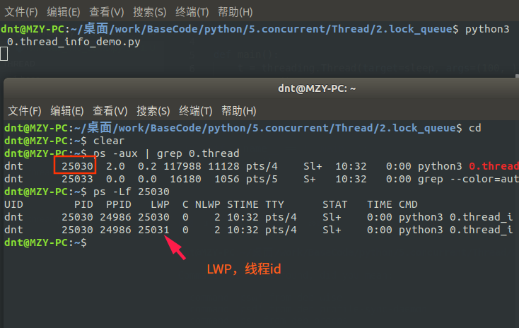
回顾：进程共享的内容：（回顾：http://www.cnblogs.com/dotnetcrazy/p/9363810.html）
- 代码（.text）
- 文件描述符（fd）
- 内存映射（mmap）
2.2.1.线程同步~互斥锁Lock¶
线程之间共享数据的确方便，但是也容易出现数据混乱的现象，来看个例子：
from multiprocessing.dummy import threading
num = 0 # def global num
def test(i):
print(f"子进程：{i}")
global num
for i in range(100000):
num += 1
def main():
p_list = [threading.Thread(target=test, args=(i, )) for i in range(5)]
for i in p_list:
i.start()
for i in p_list:
i.join()
print(num) # 应该是500000，发生了数据混乱，结果少了很多
if __name__ == '__main__':
main()
输出：（应该是500000，发生了数据混乱，只剩下358615）
子进程：0
子进程：1
子进程：2
子进程：3
子进程：4
452238Lock案例¶
共享资源+CPU调度==>数据混乱==解决==>线程同步 这时候Lock就该上场了
互斥锁是实现线程同步最简单的一种方式，读写都加锁（读写都会串行）
先看看上面例子怎么解决调：
from multiprocessing.dummy import threading, Lock
num = 0 # def global num
def test(i, lock):
print(f"子进程：{i}")
global num
for i in range(100000):
with lock:
num += 1
def main():
lock = Lock()
p_list = [threading.Thread(target=test, args=(i, lock)) for i in range(5)]
for i in p_list:
i.start()
for i in p_list:
i.join()
print(num)
if __name__ == '__main__':
main()
输出：time python3 1.thread.2.py
子进程：0
子进程：1
子进程：2
子进程：3
子进程：4
500000
real 0m2.846s
user 0m1.897s
sys 0m3.159s优化下¶
lock设置为全局或者局部，性能几乎一样。循环换成map后性能有所提升（测试案例在Code中）
from multiprocessing.dummy import Pool as ThreadPool, Lock
num = 0 # def global num
lock = Lock()
def test(i):
print(f"子进程：{i}")
global num
global lock
for i in range(100000):
with lock:
num += 1
def main():
p = ThreadPool()
p.map_async(test, list(range(5)))
p.close()
p.join()
print(num)
if __name__ == '__main__':
main()
输出：
time python3 1.thread.2.py
子进程：0
子进程：1
子进程：3
子进程：2
子进程：4
500000
real 0m2.468s
user 0m1.667s
sys 0m2.644s本来多线程访问共享资源的时候可以并行，加锁后就部分串行了（没获取到的线程就阻塞等了）
【项目中可以多次加锁，每次加锁只对修改部分加(尽量少的代码) 】（以后会说协程和Actor模型）
补充：以前都是这么写的，现在支持with托管了（有时候还会用到，所以了解下）：【net是直接lock大括号包起来】
#### 以前写法：
lock.acquire() # 获取锁
try:
num += 1
finally:
lock.release() # 释放锁
#### 等价简写
with lock:
num += 1
扩展知识:（GIL在扩展篇会详说）
- GIL的作用：多线程情况下必须存在资源的竞争，GIL是为了保证在解释器级别的线程唯一使用共享资源（cpu）。
- 同步锁的作用：为了保证解释器级别下的自己编写的程序唯一使用共享资源产生了同步锁
- lock.locked()：判断 lock 当前是否上锁，如果上锁，返回True，否则返回False【上锁失败时候的处理】
2.2.2.线程同步~可重入锁RLock¶
看个场景：小明欠小张2000，欠小周5000，现在需要同时转账给他们：（规定：几次转账加几次锁） 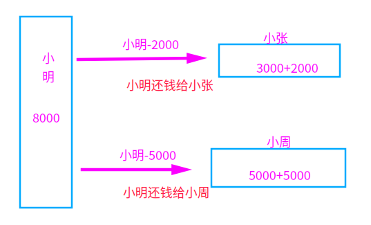
小明啥也没管，直接撸起袖子就写Code了：（错误Code示意）
from multiprocessing.dummy import Pool as ThreadPool, Lock
xiaoming = 8000
xiaozhang = 3000
xiaozhou = 5000
def test(lock):
global xiaoming
global xiaozhang
global xiaozhou
# 小明想一次搞定：
with lock:
# 小明转账2000给小张
xiaoming -= 2000
xiaozhang += 2000
with lock:
# 小明转账5000给小周
xiaoming -= 5000
xiaozhou += 5000
def main():
print(f"[还钱前]小明{xiaoming},小张{xiaozhang},小周{xiaozhou}")
lock = Lock()
p = ThreadPool()
p.apply_async(test, args=(lock, ))
p.close()
p.join()
print(f"[还钱后]小明{xiaoming},小张{xiaozhang},小周{xiaozhou}")
if __name__ == '__main__':
main()
小明写完代码就出去了，这可把小周和小张等急了，打了N个电话来催，小明心想啥情况？
一看代码楞住了，改了改代码，轻轻松松把钱转出去了：
from multiprocessing.dummy import Pool as ThreadPool, Lock
xiaoming = 8000
xiaozhang = 3000
xiaozhou = 5000
# 小明转账2000给小张
def a_to_b(lock):
global xiaoming
global xiaozhang
with lock:
xiaoming -= 2000
xiaozhang += 2000
# 小明转账5000给小周
def a_to_c(lock):
global xiaoming
global xiaozhou
with lock:
xiaoming -= 5000
xiaozhou += 5000
def main():
print(f"[还钱前]小明{xiaoming},小张{xiaozhang},小周{xiaozhou}")
lock = Lock()
p = ThreadPool()
p.apply_async(a_to_b, args=(lock, ))
p.apply_async(a_to_c, args=(lock, ))
p.close()
p.join()
print(f"[还钱后]小明{xiaoming},小张{xiaozhang},小周{xiaozhou}")
if __name__ == '__main__':
main()
输出：
[还钱前]小明8000,小张3000,小周5000
[还钱后]小明1000,小张5000,小周10000就这么算了吗？不不不，不符合小明性格，于是小明研究了下，发现～还有个递归锁RLock呢，正好解决他的问题：
from multiprocessing.dummy import Pool as ThreadPool, RLock # 就把这边换了下
xiaoming = 8000
xiaozhang = 3000
xiaozhou = 5000
def test(lock):
global xiaoming
global xiaozhang
global xiaozhou
# 小明想一次搞定：
with lock:
# 小明转账2000给小张
xiaoming -= 2000
xiaozhang += 2000
with lock:
# 小明转账5000给小周
xiaoming -= 5000
xiaozhou += 5000
def main():
print(f"[还钱前]小明{xiaoming},小张{xiaozhang},小周{xiaozhou}")
lock = RLock() # 就把这边换了下
p = ThreadPool()
p.apply_async(test, args=(lock, ))
p.close()
p.join()
print(f"[还钱后]小明{xiaoming},小张{xiaozhang},小周{xiaozhou}")
if __name__ == '__main__':
main()
RLock内部维护着一个Lock和一个counter变量，counter记录了acquire的次数，从而使得资源可以被多次require。直到一个线程所有的acquire都被release，其他的线程才能获得资源
2.2.3.死锁引入¶
1.多次获取导致死锁¶
小明想到了之前说的（互斥锁Lock读写都加锁）就把代码拆分研究了下：
print("[开始]小明转账2000给小张")
lock.acquire() # 获取锁
xiaoming -= 2000
xiaozhang += 2000
print("[开始]小明转账5000给小周")
lock.acquire() # 获取锁（互斥锁第二次加锁）
xiaoming -= 5000
xiaozhou += 5000
lock.release() # 释放锁
print("[结束]小明转账5000给小周")
lock.release() # 释放锁
print("[开始]小明转账2000给小张")
输出发现：（第二次加锁的时候，变成阻塞等了【死锁】）
[还钱前]小明8000,小张3000,小周5000
[开始]小明转账2000给小张
[开始]小明转账5000给小周这种方式，Python提供的RLock就可以解决了
2.常见的死锁¶
看个场景：小明和小张需要流水帐，经常互刷～小明给小张转账1000，小张给小明转账1000
一般来说，有几个共享资源就加几把锁（小张、小明就是两个共享资源，所以需要两把Lock）
先描述下然后再看代码：
正常流程 小明给小张转1000：小明自己先加个锁==>小明-1000==>获取小张的锁==>小张+1000==>转账完毕
死锁情况 小明给小张转1000：小明自己先加个锁==>小明-1000==>准备获取小张的锁。可是这时候小张准备转账给小明，已经把自己的锁获取了，在等小明的锁（两个人相互等，于是就一直死锁了）
代码模拟一下过程：
from time import sleep
from multiprocessing.dummy import Pool as ThreadPool, Lock
xiaoming = 5000
xiaozhang = 8000
m_lock = Lock() # 小明的锁
z_lock = Lock() # 小张的锁
# 小明转账1000给小张
def a_to_b():
global xiaoming
global xiaozhang
global m_lock
global z_lock
with m_lock:
xiaoming -= 1000
sleep(0.01)
with z_lock:
xiaozhang += 1000
# 小张转账1000给小明
def b_to_a():
global xiaoming
global xiaozhang
global m_lock
global z_lock
with z_lock:
xiaozhang -= 1000
sleep(0.01)
with m_lock:
xiaoming += 1000
def main():
print(f"[还钱前]小明{xiaoming},小张{xiaozhang}")
p = ThreadPool()
p.apply_async(a_to_b)
p.apply_async(b_to_a)
p.close()
p.join()
print(f"[还钱后]小明{xiaoming},小张{xiaozhang}")
if __name__ == '__main__':
main()
输出：（卡在这边了）
[转账前]小明5000,小张8000项目中像这类的情况，一般都是这几种解决方法：(还有其他解决方案，后面会继续说)
- 按指定顺序去访问共享资源
- trylock的重试机制（
Lock(False)） - 在访问其他锁的时候，先把自己锁解了
- 得不到全部锁就先放弃已经获取的资源
比如上面的情况，我们如果规定，不管是谁先转账，先从小明开始，然后再小张，那么就没问题了。或者谁钱多就谁（权重高的优先）
from time import sleep
from multiprocessing.dummy import Pool as ThreadPool, Lock
xiaoming = 5000
xiaozhang = 8000
m_lock = Lock() # 小明的锁
z_lock = Lock() # 小张的锁
# 小明转账1000给小张
def a_to_b():
global xiaoming
global xiaozhang
global m_lock
global z_lock
# 以上次代码为例，这边只修改了这块
with z_lock: # 小张权重高，大家都先获取小张的锁
xiaozhang += 1000
sleep(0.01)
with m_lock:
xiaoming -= 1000
# 小张转账1000给小明
def b_to_a():
global xiaoming
global xiaozhang
global m_lock
global z_lock
with z_lock:
xiaozhang -= 1000
sleep(0.01)
with m_lock:
xiaoming += 1000
def main():
print(f"[转账前]小明{xiaoming},小张{xiaozhang}")
p = ThreadPool()
p.apply_async(a_to_b)
p.apply_async(b_to_a)
p.close()
p.join()
print(f"[转账后]小明{xiaoming},小张{xiaozhang}")
if __name__ == '__main__':
main()
输出：
[转账前]小明5000,小张8000
[转账后]小明5000,小张80002.2.4.线程同步~条件变量Condition¶
条件变量一般都不是锁，能阻塞线程，从而减少不必要的竞争，Python内置了RLock（不指定就是RLock）
看看源码：
class Condition:
"""
实现条件变量的类。
条件变量允许一个或多个线程等到另一个线程通知它们为止
如果给出了lock参数而不是None，那必须是Lock或RLock对象作底层锁。
否则，一个新的RLock对象被创建并用作底层锁。
"""
def __init__(self, lock=None):
if lock is None:
lock = RLock()
self._lock = lock
# 设置lock的acquire（）和release（）方法
self.acquire = lock.acquire
self.release = lock.release
再看看可不可以进行with托管：（支持）
def __enter__(self):
return self._lock.__enter__()
def __exit__(self, *args):
return self._lock.__exit__(*args)
看个生产消费者的简单例子：(生产完就通知消费者)
from multiprocessing.dummy import Pool as ThreadPool, Condition
s_list = []
con = Condition()
def Shop(i):
global con
global s_list
# 加锁保护共享资源
for x in range(5):
with con:
s_list.append(x)
print(f"[生产者{i}]生产商品{x}")
con.notify_all() # 通知消费者有货了
def User(i):
global con
global s_list
while True:
with con:
if s_list:
print(f"列表商品：{s_list}")
name = s_list.pop() # 消费商品
print(f"[消费者{i}]消费商品{name}")
print(f"列表剩余：{s_list}")
else:
con.wait()
def main():
p = ThreadPool()
# 两个生产者
p.map_async(Shop, range(2))
# 五个消费者
p.map_async(User, range(5))
p.close()
p.join()
if __name__ == '__main__':
main()
输出：（list之类的虽然可以不加global标示，但是为了后期维护方便，建议加上）
[生产者0]生产商品0
[生产者0]生产商品1
列表商品：[0, 1]
[消费者0]消费商品1
列表剩余：[0]
列表商品：[0]
[消费者0]消费商品0
列表剩余：[]
[生产者0]生产商品2
列表商品：[2]
[消费者1]消费商品2
列表剩余：[]
[生产者0]生产商品3
[生产者1]生产商品0
[生产者0]生产商品4
列表商品：[3, 0, 4]
[消费者1]消费商品4
列表剩余：[3, 0]
[生产者1]生产商品1
[生产者1]生产商品2
[生产者1]生产商品3
[生产者1]生产商品4
列表商品：[3, 0, 1, 2, 3, 4]
[消费者2]消费商品4
列表剩余：[3, 0, 1, 2, 3]
列表商品：[3, 0, 1, 2, 3]
[消费者0]消费商品3
列表剩余：[3, 0, 1, 2]
列表商品：[3, 0, 1, 2]
[消费者1]消费商品2
列表剩余：[3, 0, 1]
列表商品：[3, 0, 1]
[消费者3]消费商品1
列表剩余：[3, 0]
列表商品：[3, 0]
[消费者3]消费商品0
列表剩余：[3]
列表商品：[3]
[消费者3]消费商品3
列表剩余：[]通知方法：
- notify() ：发出资源可用的信号，唤醒任意一条因 wait(）阻塞的进程
- notifyAll() ：发出资源可用信号，唤醒所有因wait()阻塞的进程
2.2.5.线程同步~信号量Semaphore(互斥锁的高级版)¶
记得当时在分析multiprocessing.Queue源码的时候，有提到过（点我回顾）
同进程的一样，semaphore管理一个内置的计数器，每当调用acquire()时内置函数-1，每当调用release()时内置函数+1
通俗讲就是：在互斥锁的基础上封装了下，实现一定程度的并行
举个例子，以前使用互斥锁的时候：（厕所就一个坑位，必须等里面的人出来才能让另一个人上厕所）

使用信号量之后：厕所坑位增加到5个（自己指定），这样可以5个人一起上厕所了==>实现了一定程度的并发
举个例子：（Python在语法这点特别爽，不用你记太多异同，功能差不多基本上代码也就差不多）
from time import sleep
from multiprocessing.dummy import Pool as ThreadPool, Semaphore
sem = Semaphore(5) # 限制最大连接数为5
def goto_wc(i):
global sem
with sem:
print(f"[线程{i}]上厕所")
sleep(0.1)
def main():
p = ThreadPool()
p.map_async(goto_wc, range(50))
p.close()
p.join()
if __name__ == '__main__':
main()
输出： 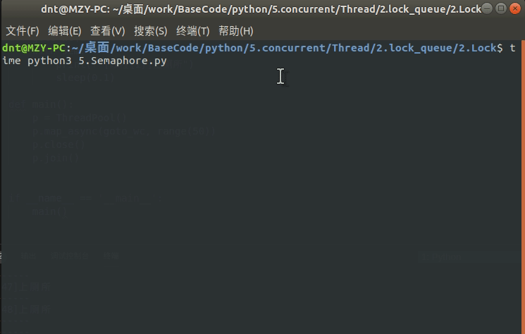
可能看了上节回顾的会疑惑：源码里面明明是BoundedSemaphore，搞啥呢？
其实BoundedSemaphore就比Semaphore多了个在调用release()时检查计数器的值是否超过了计数器的初始值，如果超过了将抛出一个异常
以上一个案例说事：你换成BoundedSemaphore和上面效果一样==>sem = BoundedSemaphore(5)
Semaphore补充¶
之前有人问Semaphore信号量在项目中有什么应用？(⊙o⊙)…额，这个其实从概念就推出场景了，控制并发嘛～举个例子：
- 比如说我们调用免费API的时候经常看见单位时间内限制并发数在30以内，想高并发==>给钱
( ⊙ o ⊙ )捂脸 - 再比如我们去爬数据的时候控制一下爬虫的并发数（
避免触发反爬虫的一种方式,其他部分后面会逐步引入）
这些虚的说完了，来个控制并发数的案例，然后咱们就继续并发编程的衍生了:
import time
from multiprocessing.dummy import threading, Semaphore
class MyThread(threading.Thread):
def __init__(self, id, sem):
super().__init__()
self.__id = id
self.__sem = sem
def run(self):
self.__sem.acquire() # 获取
self.api_test()
def api_test(self):
"""模拟api请求"""
time.sleep(1)
print(f"id={self.__id}")
self.__sem.release() # 释放
def main():
sem = Semaphore(10) # 控制并发数
t_list = [MyThread(i, sem) for i in range(1000)]
for t in t_list:
t.start()
for t in t_list:
t.join()
if __name__ == '__main__':
main()
输出图示： 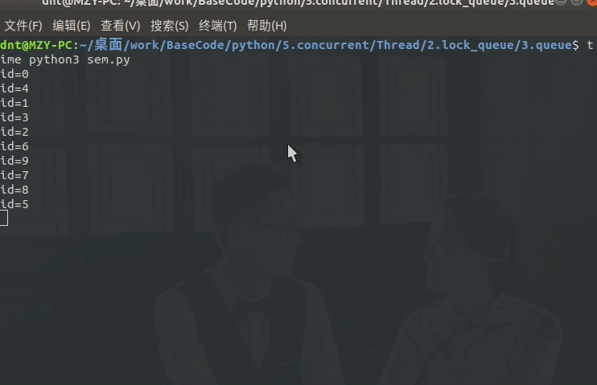
运行分析： 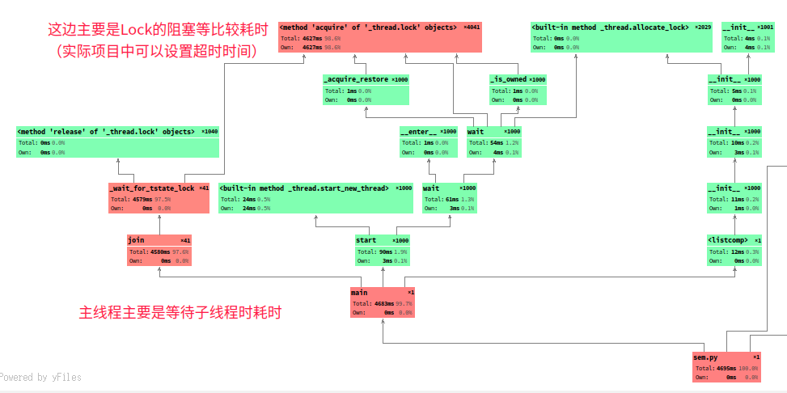
性能全图：

锁专题扩展¶
1.加锁机制¶
在多线程程序中，死锁问题很大一部分是由于线程同时获取多个锁造成的，eg：一个线程获取了第一个锁，然后在获取第二个锁的 时候发生阻塞，那么这个线程就可能阻塞其他线程的执行，从而导致整个程序假死。
解决死锁问题的一种方案是为程序中的每一个锁分配一个唯一的id，然后只允许按照升序规则来使用多个锁，当时举了个小明小张转账的简单例子，来避免死锁，这次咱们再看一个案例：（这个规则使用上下文管理器非常简单）
先看看源码，咱们怎么使用：
# 装饰器方法
def contextmanager(func):
"""
方法格式
@contextmanager
def some_generator(<arguments>):
<setup>
try:
yield <value>
finally:
<cleanup>
然后就可以直接使用with托管了
with some_generator(<arguments>) as <variable>:
<body>
"""
@wraps(func)
def helper(*args, **kwds):
return _GeneratorContextManager(func, args, kwds)
return helper
翻译成代码就是这样了：（简化）
from contextlib import contextmanager # 引入上下文管理器
@contextmanager
def lock_manager(*args):
# 先排个序（按照id排序）
args = sorted(args, key=lambda x: id(x))
try:
for lock in args:
lock.acquire()
yield
finally:
# 先释放最后加的锁（倒序释放）
for lock in reversed(args):
lock.release()
基础忘记了可以点我（lambda）
以上面小明小张转账案例为例子：（不用再管锁顺序之类的了，直接全部丢进去：with lock_manager(...)）
from contextlib import contextmanager # 引入上下文管理器
from multiprocessing.dummy import Pool as ThreadPool, Lock
@contextmanager
def lock_manager(*args):
# 先排个序（按照id排序）
args = sorted(args, key=lambda x: id(x))
try:
for lock in args:
lock.acquire()
yield
finally:
# 先释放最后加的锁（倒序释放）
for lock in reversed(args):
lock.release()
xiaoming = 5000
xiaozhang = 8000
m_lock = Lock() # 小明的锁
z_lock = Lock() # 小张的锁
# 小明转账1000给小张
def a_to_b():
global xiaoming
global xiaozhang
global m_lock
global z_lock
print(f"[转账前]小明{xiaoming},小张{xiaozhang}")
with lock_manager(m_lock, z_lock):
xiaoming -= 1000
xiaozhang += 1000
print(f"[转账后]小明{xiaoming},小张{xiaozhang}")
# 小张转账1000给小明
def b_to_a():
global xiaoming
global xiaozhang
global m_lock
global z_lock
print(f"[转账前]小明{xiaoming},小张{xiaozhang}")
with lock_manager(m_lock, z_lock):
xiaozhang -= 1000
xiaoming += 1000
print(f"[转账后]小明{xiaoming},小张{xiaozhang}")
def main():
print(f"[互刷之前]小明{xiaoming},小张{xiaozhang}")
p = ThreadPool()
for _ in range(5):
p.apply_async(a_to_b)
p.apply_async(b_to_a)
p.close()
p.join()
print(f"[互刷之后]小明{xiaoming},小张{xiaozhang}")
if __name__ == '__main__':
main()
输出：
[互刷之前]小明5000,小张8000
[转账前]小明5000,小张8000
[转账前]小明5000,小张8000
[转账后]小明4000,小张9000
[转账前]小明5000,小张8000
[转账后]小明5000,小张8000
[转账前]小明5000,小张8000
[转账前]小明4000,小张9000
[转账后]小明4000,小张9000
[转账后]小明5000,小张8000
[转账前]小明5000,小张8000
[转账后]小明4000,小张9000
[转账前]小明4000,小张9000
[转账前]小明4000,小张9000
[转账后]小明5000,小张8000
[转账前]小明5000,小张8000
[转账后]小明4000,小张9000
[转账后]小明5000,小张8000
[转账前]小明5000,小张8000
[转账后]小明4000,小张9000
[转账后]小明5000,小张8000
[互刷之后]小明5000,小张8000再来个验证，在他们互刷的过程中，小潘还了1000元给小明
from time import sleep
from contextlib import contextmanager # 引入上下文管理器
from multiprocessing.dummy import Pool as ThreadPool, Lock
@contextmanager
def lock_manager(*args):
# 先排个序（按照id排序）
args = sorted(args, key=lambda x: id(x))
try:
for lock in args:
lock.acquire()
yield
finally:
# 先释放最后加的锁（倒序释放）
for lock in reversed(args):
lock.release()
xiaopan = 9000
xiaoming = 5000
xiaozhang = 8000
m_lock = Lock() # 小明的锁
z_lock = Lock() # 小张的锁
p_lock = Lock() # 小潘的锁
# 小明转账1000给小张
def a_to_b():
global xiaoming
global xiaozhang
global m_lock
global z_lock
print(f"[转账前]小明{xiaoming},小张{xiaozhang}")
with lock_manager(m_lock, z_lock):
xiaoming -= 1000
xiaozhang += 1000
print(f"[转账后]小明{xiaoming},小张{xiaozhang}")
# 小张转账1000给小明
def b_to_a():
global xiaoming
global xiaozhang
global m_lock
global z_lock
print(f"[转账前]小明{xiaoming},小张{xiaozhang}")
with lock_manager(m_lock, z_lock):
xiaozhang -= 1000
xiaoming += 1000
print(f"[转账后]小明{xiaoming},小张{xiaozhang}")
# 小潘还1000给小明
def c_to_a():
global xiaoming
global xiaopan
global m_lock
global p_lock
print(f"[转账前]小明{xiaoming},小潘{xiaopan}")
with lock_manager(m_lock, p_lock):
xiaopan -= 1000
xiaoming += 1000
print(f"[转账后]小明{xiaoming},小潘{xiaopan}")
def main():
print(f"[互刷之前]小明{xiaoming},小张{xiaozhang},小潘{xiaopan}")
p = ThreadPool()
for _ in range(5):
p.apply_async(a_to_b)
# 在他们互刷的过程中，小潘还了1000元给小明
if _ == 3:
p.apply_async(c_to_a)
p.apply_async(b_to_a)
p.close()
p.join()
print(f"[互刷之后]小明{xiaoming},小张{xiaozhang},小潘{xiaopan}")
if __name__ == '__main__':
main()
输出：
[互刷之前]小明5000,小张8000,小潘9000
[转账前]小明5000,小张8000
[转账前]小明5000,小张8000
[转账后]小明4000,小张9000
[转账前]小明5000,小张8000
[转账前]小明4000,小张9000
[转账后]小明5000,小张8000
[转账前]小明5000,小张8000
[转账后]小明4000,小张9000
[转账后]小明5000,小张8000
[转账前]小明5000,小张8000
[转账后]小明4000,小张9000
[转账前]小明4000,小张9000
[转账前]小明4000,小潘9000 # 注意下这个
[转账后]小明5000,小张8000
[转账前]小明5000,小张8000
[转账后]小明4000,小张9000
[转账后]小明5000,小潘8000 # 注意下这个
[转账前]小明5000,小张9000
[转账后]小明6000,小张8000
[转账后]小明5000,小张9000
[转账前]小明6000,小张8000
[转账后]小明6000,小张8000
[互刷之后]小明6000,小张8000,小潘8000上下文管理器进一步完善¶
from contextlib import contextmanager
from multiprocessing.dummy import threading # or import threading
# ThreadLocal 下节会说
_local = threading.local()
@contextmanager
def acquire(*args):
# 以id将锁进行排序
args = sorted(args, key=lambda x: id(x))
# 确保不违反以前获取的锁顺序
acquired = getattr(_local, 'acquired', [])
if acquired and max(id(lock) for lock in acquired) >= id(args[0]):
raise RuntimeError('锁顺序有问题')
# 获取所有锁
acquired.extend(args)
_local.acquired = acquired # ThreadLocal：每个线程独享acquired
# 固定格式
try:
for lock in args:
lock.acquire()
yield
finally:
# 逆向释放锁资源
for lock in reversed(args):
lock.release()
# 把释放掉的锁给删了
del acquired[-len(args):]
2.哲学家吃面¶
先看看场景：五个外国哲学家到中国来吃饭了，因为不了解行情，每个人只拿了一双筷子，然后点了一大份的面。碍于面子，他们不想再去拿筷子了，于是就想通过脑子来解决这个问题。
每个哲学家吃面都是需要两只筷子的，这样问题就来了：（只能拿自己两手边的筷子）
- 如果大家都是先拿自己筷子，再去抢别人的筷子，那么就都等着饿死了（死锁）
- 如果有一个人打破这个常规，先拿别人的筷子再拿自己的，那么肯定有一个人可以吃到面了
- 5个筷子，意味着最好的情况 ==> 同一时刻有2人在吃（0人，1人，2人）
把现实问题转换成代码就是：
- 哲学家--线程
- 筷子--资源（几个资源对应几把锁）
- 吃完一口面就放下筷子--lock的释放
有了上面基础这个就简单了，使用死锁避免机制解决哲学家就餐问题的实现：（不用再操心锁顺序了）
from contextlib import contextmanager # 引入上下文管理器
from multiprocessing.dummy import Pool as ThreadPool, Lock, current_process as current_thread
# 使用简化版，便于你们理解
@contextmanager
def lock_manager(*args):
# 先排个序（按照id排序）
args = sorted(args, key=lambda x: id(x))
try:
# 依次加锁
for lock in args:
lock.acquire()
yield
finally:
# 先释放最后加的锁（倒序释放）
for lock in reversed(args):
lock.release()
#########################################
def eat(l_lock, r_lock):
while True:
with lock_manager(l_lock, r_lock):
# 获取当前线程的名字
print(f"{current_thread().name}，正在吃面")
sleep(0.5)
def main():
resource = 5 # 5个筷子，5个哲学家
locks = [Lock() for i in range(resource)] # 几个资源几个锁
p = ThreadPool(resource) # 让线程池里面有5个线程（默认是cup核数）
for i in range(resource):
# 抢左手筷子（locks[i]）和右手的筷子（locks[(i + 1) % resource]）
# 举个例子更清楚：i=0 ==> 0,1；i=4 ==> 4,0
p.apply_async(eat, args=(locks[i], locks[(i + 1) % resource]))
p.close()
p.join()
if __name__ == '__main__':
main()
输出图示： 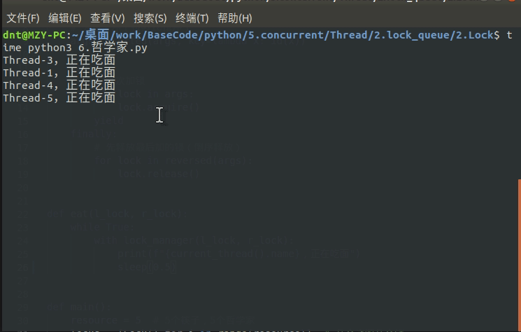
自行拓展¶
1.银行家算法¶
PS：这个一般都是操作系统的算法，了解下就可以了，上面哲学家吃面用的更多一点（欢迎投稿～）
我们可以把操作系统看作是银行家，操作系统管理的资源相当于银行家管理的资金，进程向操作系统请求分配资源相当于用户向银行家贷款。 为保证资金的安全，银行家规定：
- 当一个顾客对资金的最大需求量不超过银行家现有的资金时就可接纳该顾客；
- 顾客可以分期贷款，但贷款的总数不能超过最大需求量；
- 当银行家现有的资金不能满足顾客尚需的贷款数额时，对顾客的贷款可推迟支付，但总能使顾客在有限的时间里得到贷款；
- 当顾客得到所需的全部资金后，一定能在有限的时间里归还所有的资金.
操作系统按照银行家制定的规则为进程分配资源，当进程首次申请资源时，要测试该进程对资源的最大需求量，如果系统现存的资源可以满足它的最大需求量则按当前的申请量分配资源，否则就推迟分配。当进程在执行中继续申请资源时，先测试该进程本次申请的资源数是否超过了该资源所剩余的总量。若超过则拒绝分配资源，若能满足则按当前的申请量分配资源，否则也要推迟分配。
通俗讲就是：当一个进程申请使用资源的时候，银行家算法通过先试探分配给该进程资源，然后通过安全性算法判断分配后的系统是否处于安全状态，若不安全则试探分配作废，让该进程继续等待。
参考链接：
https://www.cnblogs.com/chuxiuhong/p/6103928.html
https://www.cnblogs.com/Lynn-Zhang/p/5672080.html
https://blog.csdn.net/qq_33414271/article/details/80245715
https://blog.csdn.net/qq_37315403/article/details/821797072.读写锁¶
Python里面没找到读写锁，这个应用场景也是有的，先简单说说这个概念，你可以结合RLock实现读写锁（了解下，用到再研究）
读写锁（一把锁）：
- 读共享：A加读锁，B、C想要加读锁==>成功（并行操作）
- 写独占：A加写锁，B、C想要读（写）==>阻塞等
- 读写不能同时（写优先级高）：A读，B要写，C要读，D要写==>A读了，B在写，C等B写完读，D等C读完写（读写不能同时进行）
扩展参考：
https://www.jb51.net/article/82999.htm
扩展：线程安全¶
上次说了锁相关，把问题稍微汇聚提炼一下～重点在思想，语言无差别
1.安全终止线程¶
正常执行线程任务没什么好说的，可以通过isAlive判断当前线程状态，对于耗时操作可以设置超时时间t.join(timeout=1)+重试机制
但是后台线程Thread(daemon=True)就没那么好控制了：这些线程会在主线程终止时自动销毁。除了如上所示的两个操作，并没有太多可以对线程做的事情（无法结束一个线程，无法给它发送信号，无法调整它的调度，也无法执行其他高级操作）
通用：寻常线程¶
比如说，如果你需要在不终止主线程的情况下杀死线程，那么这个线程就不能通过daemon的方式了，必须通过编程在某个特定点轮询来退出：
from time import sleep
from multiprocessing.dummy import threading
class MyThread(threading.Thread):
def __init__(self):
self.__running = True
super().__init__()
def terminate(self):
self.__running = False
def run(self):
# 轮询方式必须根据业务来，不然没有意义
while self.__running:
print("do something")
sleep(2)
def main():
t = MyThread()
t.start()
t.terminate() # 调用的时候可以通过`terminate`来结束线程
t.join()
# t.join(timeout=1) # 超时时间
print("over")
if __name__ == '__main__':
main()
输出：（再提醒一下，轮循必须根据业务来，不管是重试机制还是其他，这边只是举个例子）
do something
over上面这种方式，比较好理解，但是比较依赖threading.Thread，项目里面一般这么改下：
from time import sleep
from multiprocessing.dummy import threading
class ShutdownTask(object):
def __init__(self):
self.__running = True
def terminate(self):
self.__running = False
def run(self):
# 轮询方式必须根据业务来，不然没有意义
while self.__running:
print("do something")
sleep(2)
def main():
task = ShutdownTask()
t = threading.Thread(target=task.run)
t.start()
task.terminate() # 结束线程
t.join()
print("over")
if __name__ == '__main__':
main()
输出：（ShutdownTask就解耦了，不依赖threading库了，你放在进程中使用也没事了）
do something
over通用：阻塞线程¶
是不是心想着现在都妥妥的了？但是遗憾的是～如果遇到了IO阻塞的情况，轮循形同虚设，这时候就需要超时时间来解决了：
- join(timeout)是一种方式
- socket的超时机制也是一种方式（后面会探讨）
伪代码实现：（加上重试机制更完善）
class IOTask:
def __init__(self):
self.__running = True
def terminate(self):
self.__running = False
def run(self, socket):
socket.settimeout(3) # 设置超时时间
while self.__running:
try:
print("正在忙.....")
socket.recv(8192)
sleep(1)
break
except Exception:
print("超时处理")
break
由于全局解释锁（GIL）的原因，Python 的线程被限制到同一时刻只允许一个线程执行这样一个执行模型。所以，Python 的线程更适用于处理I/O和其他需要并发执行的阻塞操作（比如等待I/O、等待从数据库获取数据等等），而不是需要多处理器并行的计算密集型任务。【这也是为什么我说Python和其他语言并发编程的重点不一样：进程+协程】
特有：进程安全退出¶
Python进程Process可以通过：terminate() or signal的方式终止：（点我回顾）
terminate联合signal进行退出前处理：
from time import sleep
from signal import signal, SIGTERM
from multiprocessing import Process
# 可以释放锁、记录日记之类的操作
def save_data(signalnum, frame):
print(f"[退出前处理]signalnum:{signalnum},frame:{frame}")
exit(0)
def test():
# 信号处理
signal(SIGTERM, save_data)
print("subProcess start")
sleep(2)
print("subProcess over")
def main():
p = Process(target=test)
p.start()
sleep(1)
p.terminate() # 进程结束
p.join()
print("mainProcess over")
if __name__ == '__main__':
main()
输出：
subProcess start
[退出前处理]signalnum:15,frame:<frame object at 0x7f27df6c6210>
mainProcess over
还有一种方式，通过进程间状态共享（点我回顾），实现优雅的退出子进程
2.线程共享安全¶
这块上面说很多了，再介绍几种：
- CAS原子类(Java比较常用)
- Thread Local(常用场景：存各种的连接池)
- Lock，互斥锁，可重入锁（递归锁）,信号量，条件变量（上面都在说这些）
在多线程环境下，每个线程都有自己的数据，想要互不干扰又不想定义成局部变量传来传去，怎么办？
一开始是这么解决的：
from multiprocessing.dummy import threading
global_dict = {}
def task1():
# 根据当前线程查找：
global_dict[threading.current_thread()] = 10
global_dict[threading.current_thread()] += 10
def task2():
# 根据当前线程查找：
global_dict[threading.current_thread()] = 10
global_dict[threading.current_thread()] -= 10
def main():
t1 = threading.Thread(target=task1)
t2 = threading.Thread(target=task2)
t1.start()
t2.start()
t1.join()
t2.join()
print(global_dict)
if __name__ == '__main__':
main()
但这么搞也很麻烦，于是就有了ThreadLocal：
from multiprocessing.dummy import threading
global_local = threading.local()
def show_name():
print(f"[{threading.current_thread().name}]{global_local.name}")
def task1():
global_local.name = "小明"
show_name()
def task2():
global_local.name = "小张"
show_name()
def main():
t1 = threading.Thread(target=task1)
t2 = threading.Thread(target=task2)
t1.start()
t2.start()
t1.join()
t2.join()
if __name__ == '__main__':
main()
输出：（同样存的是name属性，不同线程间互不影响）
[Thread-1]小明
[Thread-2]小张导航¶
再来谈谈常用的两种死锁解决思路：（这次不仅仅局限在Python了）
- "顺序锁"
tryLock
说说顺序锁的算法：hash Sort(3种情况)，先看看几种hash的对比吧：
%time
from multiprocessing.dummy import Lock
m_lock = Lock()
z_lock = Lock()
print(f"是否相等：{m_lock==z_lock}\n{m_lock}\n{z_lock}") # 地址不一样
%time
m_code = hash(m_lock)
z_code = hash(z_lock)
print(f"是否相等：{m_code==z_code}\n{m_code}\n{z_code}") # 值一样
%time
from hashlib import sha1
# Java可以使用：identityhashcode
m_code = sha1(str(m_lock).encode("utf-8")).hexdigest()
z_code = sha1(str(z_code).encode("utf-8")).hexdigest()
print(f"是否相等：{m_code==z_code}\n{m_code}\n{z_code}") # 不相等
%time
m_code = id(m_lock)
z_code = id(z_lock)
print(f"是否相等：{m_code==z_code}\n{m_code}\n{z_code}") # 不相等
动态死锁¶
如果是一般的顺序死锁，那么程序代码改改逻辑基本上就可以避免了。比如调试的时候就知晓，或者借助类似于jstack or 开发工具查看：
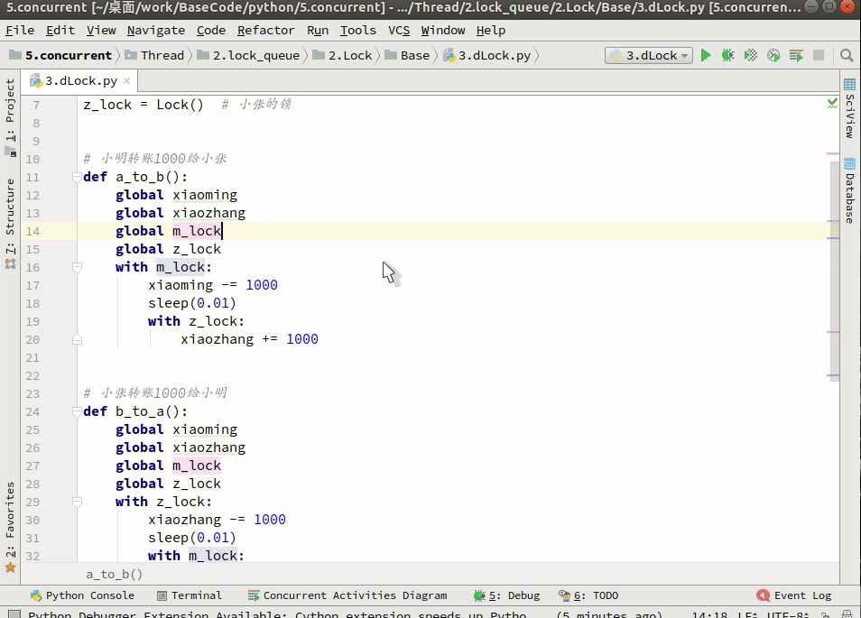
怕就怕在动态上==>举个例子：（还是小明小张互刷的案例）
有人实践后很多疑问，说明明我就按照顺序加锁了啊，先加转出账号，再加锁转入账号？
其实...换位思考就懂了==>伪代码
def transfer(p_from, p_to, money):
with p_from.lock:
p_from.money -= money
......
with p_to.lock:
p_to += money
这个虽然按照了所谓的顺序，但是转帐人其实在变，也就变成了动态的，所以也会出现死锁：
from time import sleep
from multiprocessing.dummy import Pool as ThreadPool, Lock
class People(object):
def __init__(self, name, money=5000):
self.name = name
self.lock = Lock()
self.money = money # 设置一个初始金额
def transfer(p_from, p_to, money):
with p_from.lock:
p_from.money -= money
sleep(1) # 模拟网络延迟
with p_to.lock:
p_to += money
def main():
xiaoming = People("小明")
xiaozhang = People("小张")
print(f"[互刷前]小明：{xiaoming.money},小张：{xiaozhang.money}")
p = ThreadPool()
p.apply_async(transfer, args=(xiaoming, xiaozhang, 1000))
p.apply_async(transfer, args=(xiaozhang, xiaoming, 1000))
p.close()
p.join()
print(f"[互刷后]小明：{xiaoming.money},小张：{xiaozhang.money}")
if __name__ == '__main__':
main()
输出：（死锁了，联想哲学家吃面～每个人先拿自己的筷子再抢人的筷子）
[互刷前]小明：5000,小张：5000解决方案～伪代码思路：
def transfer(cls, p_from, p_to, money):
"""p_from：谁转账,p_to：转给谁,money:转多少"""
from_hash = get_hash(p_from)
to_hash = get_hash(p_to)
# 规定：谁大先锁谁
if from_hash > to_hash:
with p_from.lock:
p_from.money -= money
sleep(1) # 模拟网络延迟
with p_to.lock:
p_to.money += money
elif from_hash < to_hash:
with p_to.lock:
p_to.money += money
sleep(1) # 模拟网络延迟
with p_from.lock:
p_from.money -= money
# hash出现碰撞时处理：（可能性很低）
else:
# 平局的时候，大家一起抢一个中间锁，谁抢到谁先转账
with cls.tie_lock:
with p_from.lock:
p_from.money -= money
sleep(1) # 模拟网络延迟
with p_to.lock:
p_to.money += money
完整Python代码示意：
from time import sleep
from multiprocessing.dummy import Pool as ThreadPool, Lock
class Account(object):
def __init__(self, name, money=5000):
self.name = name
self.lock = Lock()
self.money = money # 设置一个初始金额
class Bank(object):
tie_lock = Lock()
@classmethod
def __get_hash(cls, obj):
return id(obj) # hash_func(obj)
@classmethod
def transfer(cls, p_from, p_to, money):
"""p_from：谁转账,p_to：转给谁,money:转多少"""
from_hash = cls.__get_hash(p_from)
to_hash = cls.__get_hash(p_to)
print(f"from:{p_from.name}to{p_to.name}=>{money}")
# 规定：谁大先锁谁
if from_hash > to_hash:
print("from_hash > to_hash")
with p_from.lock:
p_from.money -= money
sleep(1) # 模拟网络延迟
with p_to.lock:
p_to.money += money
elif from_hash < to_hash:
print("from_hash < to_hash")
with p_to.lock:
p_to.money += money
sleep(1) # 模拟网络延迟
with p_from.lock:
p_from.money -= money
# hash出现碰撞时处理：（可能性很低）
else:
print("from_hash < to_hash")
# 平局的时候，大家一起抢一个中间锁，谁抢到谁先转账
with cls.tie_lock:
with p_from.lock:
p_from.money -= money
sleep(1) # 模拟网络延迟
with p_to.lock:
p_to.money += money
def main():
xiaoming = Account("小明")
xiaozhang = Account("小张")
xiaopan = Account("小潘")
print(f"[互刷前]小明：{xiaoming.money},小张：{xiaozhang.money},小潘{xiaopan.money}")
p = ThreadPool()
for i in range(3):
p.apply_async(Bank.transfer, args=(xiaoming, xiaozhang, 1000))
if i == 1: # 小潘突然间还了1000给小明
p.apply_async(Bank.transfer, args=(xiaopan, xiaoming, 1000))
p.apply_async(Bank.transfer, args=(xiaozhang, xiaoming, 1000))
p.close()
p.join()
print(f"[互刷后]小明：{xiaoming.money},小张：{xiaozhang.money},小潘{xiaopan.money}")
if __name__ == '__main__':
main()
输出：
[互刷前]小明：5000,小张：5000,小潘5000
from:小明to小张=>1000
from_hash < to_hash
from:小张to小明=>1000
from:小明to小张=>1000
from_hash > to_hash
from_hash < to_hash
from:小潘to小明=>1000
from_hash < to_hash
from:小张to小明=>1000
from:小明to小张=>1000
from_hash > to_hash
from_hash < to_hash
from:小张to小明=>1000
from_hash > to_hash
[互刷后]小明：6000,小张：5000,小潘4000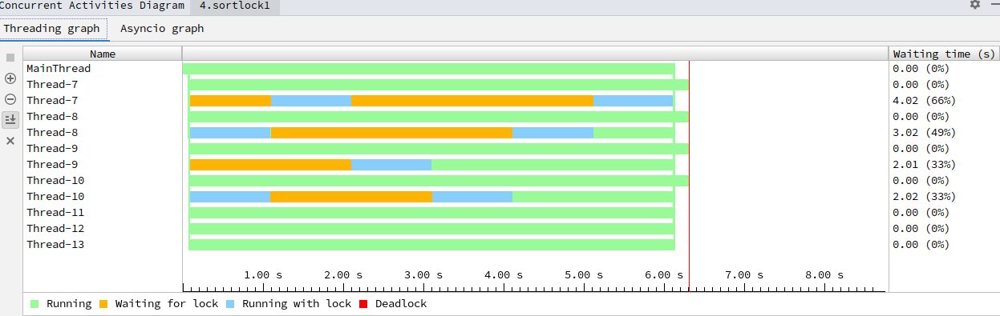 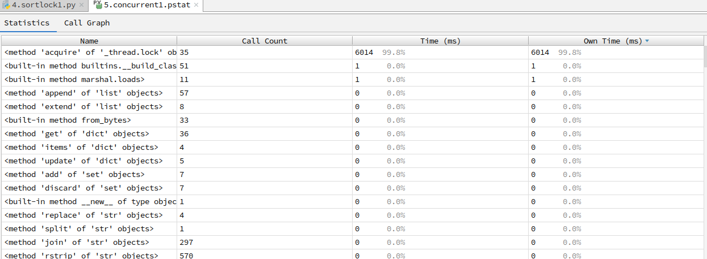
Python上下文管理器我就不说了，上面说过了，思路和“顺序锁”基本一样：
from contextlib import contextmanager
from multiprocessing.dummy import threading # or import threading
_local = threading.local()
@contextmanager
def acquire(*args):
# 以id将锁进行排序
args = sorted(args, key=lambda x: id(x))
# 确保不违反以前获取的锁顺序
acquired = getattr(_local, 'acquired', [])
if acquired and max(id(lock) for lock in acquired) >= id(args[0]):
raise RuntimeError('锁顺序有问题')
# 获取所有锁
acquired.extend(args)
_local.acquired = acquired # ThreadLocal：每个线程独享acquired
# 固定格式
try:
for lock in args:
lock.acquire()
yield
finally:
# 逆向释放锁资源
for lock in reversed(args):
lock.release()
# 把释放掉的锁给删了
del acquired[-len(args):]
活锁¶
大家都听说过死锁deadlock，但是很少有人听说过活锁livelock。活锁主要由两个线程过度谦让造成，两个线程都想让对方先干话，结果反而都无法继续执行下去。因为两个线程都在活跃状态，故称活锁。
trylock¶
trylock可以解决死锁问题，但是用不好也会出现少见的活锁问题：
from time import sleep
from random import random
from multiprocessing.dummy import Pool as ThreadPool, Lock
class People(object):
def __init__(self, name, money=5000):
self.name = name
self.lock = Lock() # 非阻塞等
self.money = money # 设置一个初始金额
def transfer(p_from, p_to, money):
flag = True
while flag:
# 尝试获取p_from.lock
if p_from.lock.acquire(False): # 非阻塞
try:
sleep(1) # 模拟网络延迟
# 尝试获取p_to.lock
if p_to.lock.acquire(False):
try:
p_from.money -= money
p_to.money += money
flag = False
finally:
print("p_to release")
p_to.lock.release() # 释放锁
finally:
p_from.lock.release() # 释放锁
sleep(random()) # 随机睡[0,1)s
def main():
xiaoming = People("小明")
xiaozhang = People("小张")
xiaopan = People("小潘")
print(f"[互刷前]小明：{xiaoming.money},小张：{xiaozhang.money},小潘：{xiaopan.money}")
p = ThreadPool()
for i in range(3):
p.apply_async(transfer, args=(xiaoming, xiaozhang, 1000))
if i == 1:
p.apply_async(transfer, args=(xiaopan, xiaoming, 1000))
p.apply_async(transfer, args=(xiaozhang, xiaoming, 1000))
p.close()
p.join()
print(f"[互刷后]小明：{xiaoming.money},小张：{xiaozhang.money},小潘：{xiaopan.money}")
if __name__ == '__main__':
main()
输出：（没有sleep(random()) # 随机睡[0,1)s就是一个活锁了）
[互刷前]小明：5000,小张：5000,小潘：5000
p_to release
p_to release
p_to release
p_to release
p_to release
p_to release
[互刷后]小明：6000,小张：5000,小潘：4000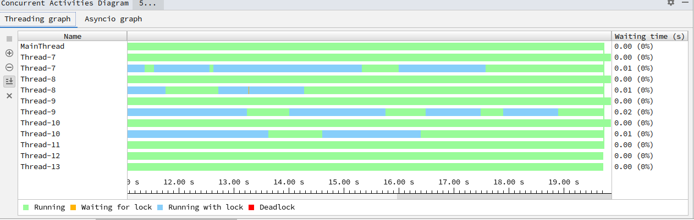 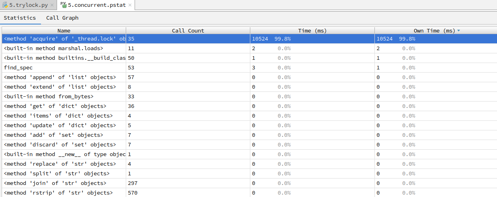
可以思考一下，为什么trylock的时候p_from.money -= money和p_to.money += money都要放在code最里面
参考链接：
守护线程参考：https://www.cnblogs.com/brolanda/p/4709947.html
Posix Thread：https://www.cnblogs.com/randyniu/p/9189112.html
一句话实现并行：http://chriskiehl.com/article/parallelism-in-one-line
进程与线程的一个简单解释：http://www.ruanyifeng.com/blog/2013/04/processes_and_threads.html
线程分离方面的参考：
http://python.su/forum/topic/20403/
https://stackoverflow.com/questions/14175016/python-pthread-detach-analog
https://stackoverflow.com/questions/11904848/what-is-the-difference-between-a-detached-thread-and-a-daemon-thread
线程锁参考：
https://www.cnblogs.com/nuomin/p/7899675.html
https://blog.csdn.net/alina_catty/article/details/78792085
https://mozillazg.com/2016/09/python-threading-multiprocessing-logging-equal-deadlock.html
死锁调试参考：
https://blog.alswl.com/2013/11/python-gdb
https://wiki.python.org/moin/DebuggingWithGdb
http://www.blogjava.net/stone2083/archive/2013/08/19/403028.html
https://stackoverflow.com/questions/1289124/python-equivalent-of-jstack
https://mozillazg.com/2016/09/python-threading-multiprocessing-logging-equal-deadlock.html
https://stackoverflow.com/questions/132058/showing-the-stack-trace-from-a-running-python-application
使用ctypes强行杀掉线程：https://blog.csdn.net/vinsuan1993/article/details/78158589
老外对杀死子线程的探讨：
https://stackoverflow.com/questions/323972/is-there-any-way-to-kill-a-thread-in-python2.2.6.线程同步~Queue-引入¶
线程同步这块，之前讲了锁系列，现在把剩下的也说说
Queue大家都很熟悉，应用场景很多很多，不仅仅局限在线(进)程同步，很多业务场景都在使用。
在开始之前先看一个秒杀场景：一般都使用乐观锁，也就是大家经常提的CAS机制来实现，数据所在的内存值，预期值，新值。当需要更新时，判断当前内存值与之前取到的值是否相等，若相等，则用新值更新，若失败则不断重试（sleep(random)）
从数据库层面控制就是这样：（原子性操作）
update table set amout=amout-#{buys}, version=version+1 where id=#{id} and version=#{version}
or
update table set amout=amout-#{buys} where id=#{id} and amout-#{buys}>=0
我们用代码模拟一下：(Python里面没有CountDownLatch，我们用之前学的条件变量实现一个)
# 模拟Java里的CountDownLatch（条件变量模拟）
# 可以理解为赛跑，当运动员全部准备好了，裁判一枪下去，开始比赛
class CountDownLatch(object):
def __init__(self):
self.con = Condition() # 条件变量
def wait(self):
with self.con:
self.con.wait()
def countDown(self):
with self.con:
self.con.notify_all() # 开枪（唤醒所有线程）
模拟：
count = 100 # 库存100件
class MyThread(threading.Thread):
def __init__(self, id, con):
self.id = id
self.con = con
super().__init__()
def run(self):
global count
self.con.wait()
if count > 0: # if count - 1 >= 0:
count -= 1
print(f"线程{self.id}~抢到一件商品")
def main():
con = CountDownLatch() # 条件变量
t_list = [MyThread(id=i, con=con) for i in range(1000)]
for t in t_list:
t.start()
print("准备开抢")
con.countDown() # 唤醒所有
for t in t_list:
t.join()
print(f"剩余库存{count}")
if __name__ == '__main__':
main()
输出：（没错，没用锁一样高并发～）
线程42~抢到一件商品
线程49~抢到一件商品
线程50~抢到一件商品
线程63~抢到一件商品
线程84~抢到一件商品
线程113~抢到一件商品
线程135~抢到一件商品
线程161~抢到一件商品
线程183~抢到一件商品
线程220~抢到一件商品
线程271~抢到一件商品
线程278~抢到一件商品
线程302~抢到一件商品
线程359~抢到一件商品
线程379~抢到一件商品
....
线程10~抢到一件商品
线程18~抢到一件商品
线程23~抢到一件商品
线程26~抢到一件商品
线程33~抢到一件商品
线程44~抢到一件商品
线程52~抢到一件商品
线程53~抢到一件商品
线程158~抢到一件商品
线程177~抢到一件商品
线程227~抢到一件商品
线程289~抢到一件商品
线程15~抢到一件商品
线程37~抢到一件商品
线程134~抢到一件商品
线程212~抢到一件商品
线程72~抢到一件商品
线程305~抢到一件商品
线程365~抢到一件商品
剩余库存0
real 0m0.189s
user 0m0.161s
sys 0m0.101s如果你把if count > 0:注释掉：（瞬间呵呵哒了）
剩余库存-900
real 0m0.215s
user 0m0.188s
sys 0m0.088s如果你在修改的时候加个锁：
real 0m0.195s
user 0m0.157s
sys 0m0.100s
在这里说，其实没有多大意义，了解下即可（数据库最大连接数是有瓶颈的，后端项目里面一般都是使用缓存的CAS机制，比如Redis的watch、memcached的gets和cas，还有就是我们下面要介绍的Queue了）
后面会说，引入部分不用深究，记住两个即可：
- 数据库层面的CAS机制（乐观锁）
- Java里面
CountDownLatch的模拟
2.2.7.线程同步~Queue¶
1.基本使用¶
Queue在讲进程的时候就有说过（进程间通信），线程用法也差不多，看个经典案例：
import time
import random
from multiprocessing.dummy import Pool as ThreadPool, Queue
def consumer(q, i):
while True:
data = q.get()
print(f"[消费者{i}]商品{data}抢光了")
def producer(q):
while True:
num = random.random()
q.put(num)
print(f"[生产者]商品{num}出厂了\n")
time.sleep(num)
def main():
q = Queue(10) # 为了演示，我这边限制一下
pool = ThreadPool()
# 一个生产者
pool.apply_async(producer, args=(q,))
# 两个消费者
pool.apply_async(consumer, args=(q, 1))
pool.apply_async(consumer, args=(q, 2))
pool.close()
pool.join()
if __name__ == '__main__':
main()
输出图示：(非阻塞可以使用put_nowait和get_nowait)
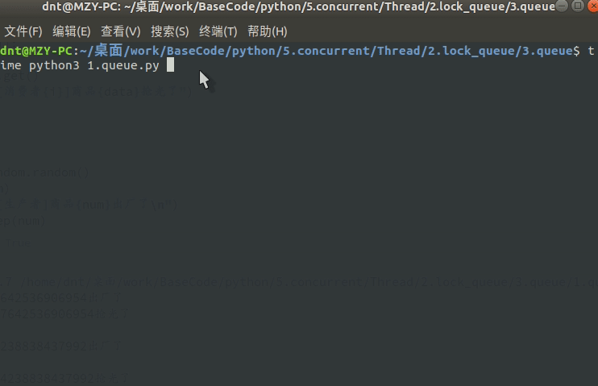
2.源码探讨¶
Queue是线程安全的放心使用，我们来看看Queue源码：（条件变量Condition和Lock的综合使用）
class Queue:
def __init__(self, maxsize=0):
self.maxsize = maxsize
self._init(maxsize)
self.mutex = threading.Lock() # 三个Condition公用
# get的时候使用，如果队列空了就等待
self.not_empty = threading.Condition(self.mutex)
# put的时候使用，如果队列满了就等待
self.not_full = threading.Condition(self.mutex)
# 每当未完成任务的数量降至零时，通知所有线程
self.all_tasks_done = threading.Condition(self.mutex)
self.unfinished_tasks = 0 # 未完成任务
def put(self, item, block=True, timeout=None):
# 如果队列满了就等待
# self.not_full = threading.Condition(self.mutex)
with self.not_full:
if self.maxsize > 0:
if not block:
if self._qsize() >= self.maxsize:
raise Full
elif timeout is None:
while self._qsize() >= self.maxsize:
self.not_full.wait()
elif timeout < 0:
raise ValueError("'timeout' must be a non-negative number")
else:
endtime = time() + timeout
while self._qsize() >= self.maxsize:
remaining = endtime - time()
if remaining <= 0.0:
raise Full
self.not_full.wait(remaining)
self._put(item)
self.unfinished_tasks += 1
self.not_empty.notify()
def get(self, block=True, timeout=None):
# 如果队列空了就等待
# self.not_empty = threading.Condition(self.mutex)
with self.not_empty:
if not block:
if not self._qsize():
raise Empty
elif timeout is None:
while not self._qsize():
self.not_empty.wait()
elif timeout < 0:
raise ValueError("'timeout' must be a non-negative number")
else:
endtime = time() + timeout
while not self._qsize():
remaining = endtime - time()
if remaining <= 0.0:
raise Empty
self.not_empty.wait(remaining)
item = self._get()
self.not_full.notify()
return item
3.多任务调度¶
来个场景，厂家倒闭（任务列表完成了）怎么通知消费者不用等待了？
回顾一下使用协程是怎么解决的：协程yield实现多任务调度
def consumer():
status = ""
while True:
tmp = yield status
if not tmp:
print("消费者已经睡觉了...")
return
print("消费者：获得商品%s号..." % tmp)
status = "ok"
def produce(c):
# 启动消费者
c.send(None)
for i in range(1, 3):
print("生产者：出产商品%s号..." % i)
# 生产商品，并提交给消费者
status = c.send(i)
print("生产者：生产者消费状态: %s" % status)
# c.send(None) 执行这个会引发StopIteration
c.close() # 使用close就可以避免了(手动关闭生成器函数，后面的调用会直接返回StopIteration异常)
if __name__ == '__main__':
# 创建消费者
c = consumer()
produce(c)
输出：
生产者：出产商品1号...
消费者：获得商品1号...
生产者：生产者消费状态: ok
生产者：出产商品2号...
消费者：获得商品2号...
生产者：生产者消费状态: ok当使用Queue时，协调生产者和消费者的关闭问题可以在队列中放置一个特殊的值，当消费者读到这个值的时候，终止执行：
import time, random, uuid
from multiprocessing.dummy import Pool as ThreadPool, Queue
stop_obj = uuid.uuid1() # 获取UUID（GUID）
def consumer(q, i):
while True:
data = q.get()
if data == stop_obj:
print(f"[消费者{i}]光荣退伍了")
q.put(data) # 如果不加这个，其他消费者就不知道了（Queue里面的数据取出来就没了）
break
print(f"[消费者{i}]商品{data}抢光了")
def producer(q):
for i in range(10):
num = random.random()
q.put(num)
print(f"[生产者]商品{num}出厂了")
time.sleep(num)
q.put(stop_obj) # 发送结束命令
def main():
q = Queue(10) # 为了演示，我这边限制一下
pool = ThreadPool()
# 一个生产者
pool.apply_async(producer, args=(q,))
# 两个消费者
pool.apply_async(consumer, args=(q, 1))
pool.apply_async(consumer, args=(q, 2))
pool.close()
pool.join()
if __name__ == '__main__':
main()
如果读到特殊值没有再放进队列就不能保证所有消费者都退出任务~Queue里面的数据取出来就没了 输出：（你可以把上面那句注释调看结果）
[生产者]商品0.33594145145041265出厂了
[消费者1]商品0.33594145145041265抢光了
[生产者]商品0.49907511942411487出厂了
[消费者1]商品0.49907511942411487抢光了
[生产者]商品0.6875075709064151出厂了
[消费者2]商品0.6875075709064151抢光了
[生产者]商品0.4039336126048405出厂了
[消费者1]商品0.4039336126048405抢光了
[生产者]商品0.4339014739644075出厂了
[消费者2]商品0.4339014739644075抢光了
[生产者]商品0.7101415304586235出厂了
[消费者1]商品0.7101415304586235抢光了
[生产者]商品0.39303515351899出厂了
[消费者2]商品0.39303515351899抢光了
[生产者]商品0.07572426360227902出厂了
[消费者1]商品0.07572426360227902抢光了
[生产者]商品0.8054064710812884出厂了
[消费者2]商品0.8054064710812884抢光了
[生产者]商品0.8085151230789658出厂了
[消费者1]商品0.8085151230789658抢光了
[消费者2]光荣退伍了
[消费者1]光荣退伍了在上面案例里面，你把uuid.uuid1()换成object()，然后比较部分的==换成is也是可以的，但是分布式系统的话还是使用UUID吧
4.自定义Queue¶
如果想在Queue的基础上扩展，可以自定义数据结构并添加所需的锁和同步机制（eg:Condition）来实现线程间通信(同步)
写demo前说说理论：
- 二叉树 ==> 每个节点最多有两个子树的树结构
- 满二叉树 ==> 除了最底层叶结点外，每一个结点都有左右子叶
- 二叉堆 ==> 本质上是一种完全二叉树，它分为两个类型：
- 最大堆：最大堆任何一个父节点的值，都大于等于它左右子节点的值，根节点是最大值
- 最小堆：最小堆任何一个父节点的值，都小于等于它左右子节点的值，根节点是最小值
以最小堆为例，画个图演示一下： 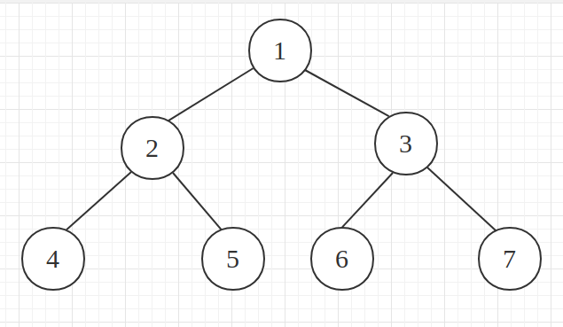
插入新节点 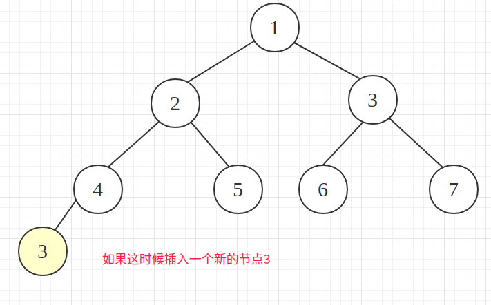
排序后的二叉树 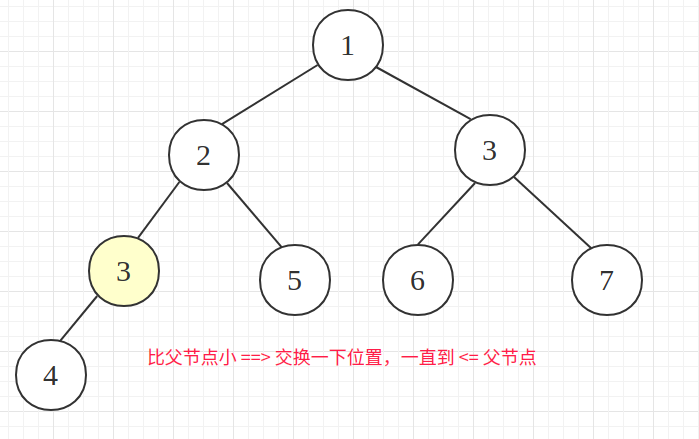
准备删除节点2 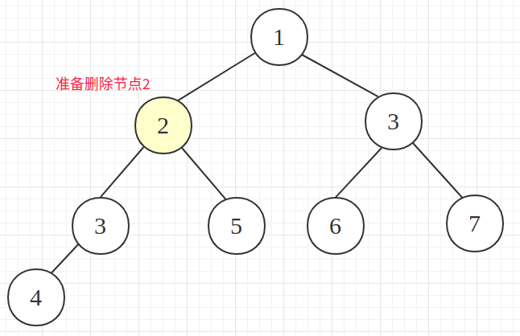
把最后一个节点拿过来充数（维护二叉树稳定） 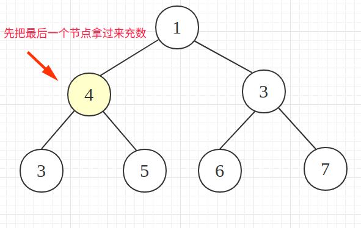
进行比较排序，把左右节点最小的拉上来 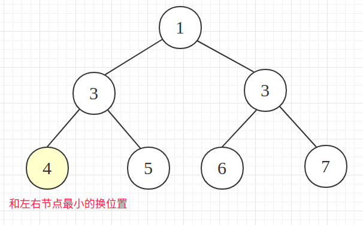
构建二叉堆：把一个无序的完全二叉树调整为二叉堆（让所有非叶子节点依次下沉）
来个乱序的二叉树 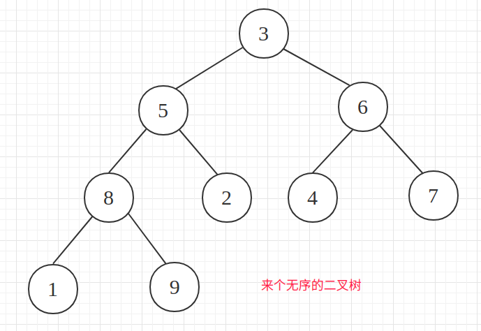
从最后一个非叶子节点开始，和最小的子节点交换位置（8和1交换） 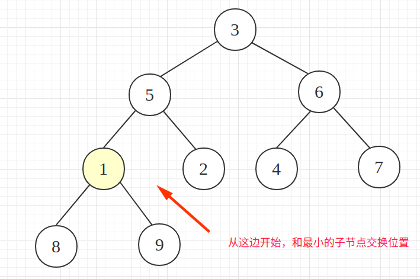
右边的也走一波（6和4交换） 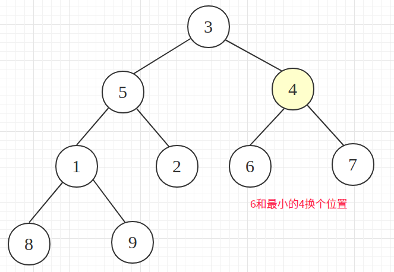
节点5和1互换 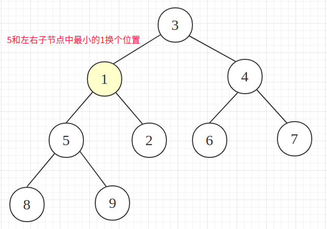
现在根节点最小了（3和1互换） 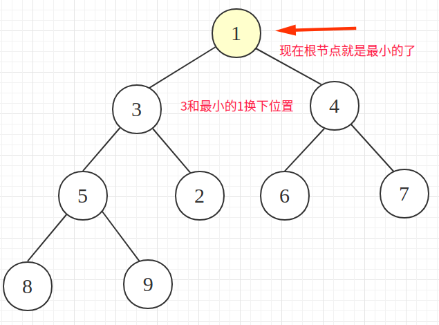
从上往下再排个序，这时候就是最小堆了 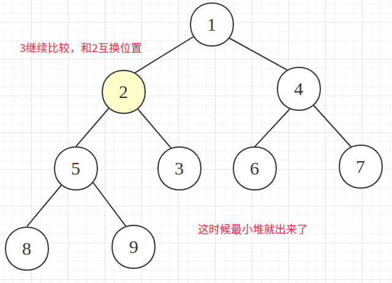
看个完全二叉树的规律：若从上至下、从左至右编号，则编号为i的结点：
- 左孩子编号为
2i+1，其右孩子编号=2i＋2 - 父节点编号=
i/2（根节点没有父节点）
把上面二叉树转换成数组： 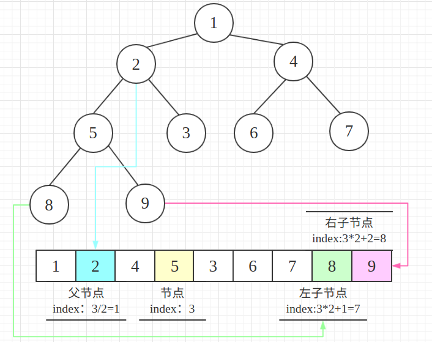
这时候再去理解优先队列就简单了：
- 最大优先队列，无论入队顺序，当前最大的元素优先出队
- 最小优先队列，无论入队顺序，当前最小的元素优先出队
Python提供了一个heapq的模块：https://docs.python.org/3/library/heapq.html
来看个最小二叉堆的案例：
%time
import heapq
h_list = []
# 来个乱序的二叉树（和图示一样）
for i in [3, 5, 6, 8, 2, 4, 7, 1, 9]:
heapq.heappush(h_list, i) # 构建最小二叉堆
# 弹出最小值
heapq.heappop(h_list) # 查看堆中最小值，不弹出 heap[0]
%time
import heapq
h_list = []
# 堆元素可以是元组，可以拓展优先级的概念
heapq.heappush(h_list, (9,"小明"))
heapq.heappush(h_list, (5,"小张"))
heapq.heappush(h_list, (7,"小周"))
heapq.heappush(h_list, (3,"小潘"))
heapq.heappop(h_list) # 弹出优先级最低的
举个使用Condition+二叉堆实现一个优先级队列:
import heapq
from uuid import uuid1
from multiprocessing.dummy import Pool as ThreadPool, Condition
class MaxPriorityQueue(object):
"""自定义一个最大优先队列"""
def __init__(self):
self.__h_list = []
self.__con = Condition() # 条件变量
self.__index = 0 # 索引
def put(self, value, sort=0):
with self.__con:
# heapq是最小二叉堆，优先级取负就是最大二叉堆了
heapq.heappush(self.__h_list, (-sort, self.__index, value))
self.__index += 1
self.__con.notify() # 随机通知一个阻塞等的线程
def get(self):
with self.__con:
while 1:
# 0 => False
if not self.qsize():
self.__con.wait() # 列表为空则阻塞等
return heapq.heappop(self.__h_list)[-1] # 返回元组最后一个元素（value）
def qsize(self):
return len(self.__h_list)
stop_obj = uuid1() # 获取UUID（GUID）
def task_put(queue):
queue.put("小周", 5)
queue.put("小潘", 7)
queue.put("小明", 3)
queue.put("小张", 9)
global stop_obj
queue.put(stop_obj)
def task_get(queue):
global stop_obj
# 全部读出来
while 1:
data = queue.get()
if data == stop_obj:
print("光荣退伍了")
queue.put(stop_obj) # 保证其他消费者也能安全退出
break
print(data)
if __name__ == '__main__':
queue = MaxPriorityQueue()
pool = ThreadPool()
pool.apply_async(task_get, args=(queue,))
pool.apply_async(task_put, args=(queue,))
pool.close()
pool.join()
输出：
小张
小潘
小周
小明
光荣退伍了浅谈multiprocessing、multiprocessing.dummy、threading¶
multiprocessing.dummy上面只列举了常用的模块，Queue这块就两个：Queue和JoinableQueue。既然提到了就顺便说几句，之前写进程篇的时候因为外出，急急忙忙就收尾了，像上面的Semaphore和Condition以及下面准备说的Event和Barrier等进程和线程都是通用的
如果要是非要找点不同，那么Queue这块还真有点不同，eg：Queue里面没有task_done和join方法，而JoinableQueue扩展了，而线程的Queue是有task_done和join的，其他常用的进程api和线程基本上一样，用到的时候查下源码或者看看官方文档即可～
进程的Queue与JoinableQueue：
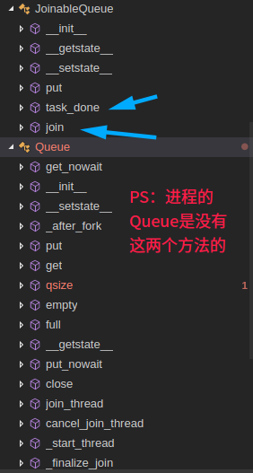
线程的Queue：
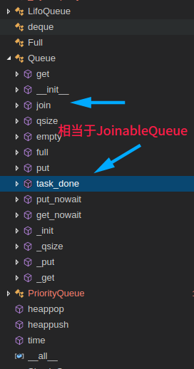
threading：
__all__ = [
'get_ident', 'active_count', 'Condition', 'current_thread', 'enumerate',
'main_thread', 'TIMEOUT_MAX', 'Event', 'Lock', 'RLock', 'Semaphore',
'BoundedSemaphore', 'Thread', 'Barrier', 'BrokenBarrierError', 'Timer',
'ThreadError', 'setprofile', 'settrace', 'local', 'stack_size'
]multiprocessing.dummy:
__all__ = [
'Process', 'current_process', 'active_children', 'freeze_support',
'Lock', 'RLock', 'Semaphore', 'BoundedSemaphore', 'Condition',
'Event', 'Barrier', 'Queue', 'Manager', 'Pipe', 'Pool', 'JoinableQueue'
]multiprocessing.dummy可以理解为multiprocessing的轻量级并发库：api基本上和multiprocessing一致，很多都是在threading的基础上修改下或者直接使用（multiprocessing在Process基础上修改）比如：
# 被轻量化了，本质还是线程
# Process模块：Process = DummyProcess(threading.Thread)
# 这就是为什么前面的代码的都是 as ThreadPool，这是怕和Process一起使用的时候把你们带坑里
# Pool：multiprocessing.pool.ThreadPool(processes, initializer, initargs)
# 为了和进程api使用起来一致
# current_process：current_process = threading.current_thread
# 再看看导入的模块就知道dummy的本质了：
from threading import Lock, RLock, Semaphore, BoundedSemaphore
from threading import Event, Condition, Barrier
from queue import Queue
5.其他Queue类型（看看就好，完全可以自己封装）¶
1.优先级队列：PriorityQueue¶
看看内部实现：(比我们实现的还精简，秒懂)
class PriorityQueue(Queue):
'''以优先级顺序检索打开条目的队列的变体（最低的第一个）
item通常是以下形式的元组:(优先级编号，数据）'''
def _init(self, maxsize):
self.queue = []
def _qsize(self):
return len(self.queue)
def _put(self, item):
heapq.heappush(self.queue, item)
def _get(self):
return heapq.heappop(self.queue)
看个上面MaxPriorityQueue的案例：（想要大数字优先级高就变负数）
from uuid import uuid1
from queue import PriorityQueue
from multiprocessing.dummy import Pool as ThreadPool
stop_obj = uuid1() # 获取UUID（GUID）
def task_put(queue):
queue.put((-5, "小周"))
queue.put((-7, "小潘"))
queue.put((-3, "小明"))
queue.put((-9, "小张"))
global stop_obj
# 可以思考一下为什么用0，如果按照小到大的顺序又该如何设置呢？
queue.put((0, stop_obj))
def task_get(queue):
global stop_obj
# 全部读出来
while 1:
data = queue.get()
if data[-1] == stop_obj:
print("光荣退伍了")
queue.put((0, stop_obj)) # 保证其他消费者也能安全退出
break
print(data[-1])
def error_print(msg):
print(msg)
if __name__ == '__main__':
queue = PriorityQueue()
pool = ThreadPool()
pool.apply_async(task_get, args=(queue, ), error_callback=error_print)
pool.apply_async(task_put, args=(queue, ), error_callback=error_print)
pool.close()
pool.join()
输出：（如果功能不够用还是自己设计吧，设计的太简单调用的时候会比较麻烦）
小张
小潘
小周
小明
光荣退伍了2.后进先出队列：LifoQueue¶
一看好像很高大上，翻翻源码：（其实就是基于List封装了个类，看来multiprocessing.dummy重写这个是有原因的）
class LifoQueue(Queue):
def _init(self, maxsize):
self.queue = []
def _qsize(self):
return len(self.queue)
def _put(self, item):
self.queue.append(item)
def _get(self):
return self.queue.pop()
看个使用案例：（完全可以直接使用List...）
from queue import LifoQueue
def main():
queue = LifoQueue()
for i in range(10):
queue.put(i)
for i in range(queue.qsize()):
print(queue.get())
if __name__ == '__main__':
main()
输出：
9
8
7
6
5
4
3
2
1
0other¶
SimpleQueue 就不说了，和Queue使用基本上一样。线程和进程有点不一样，注意下：（进程间通信手段毕竟比线程少）
threading中的SimpleQueue是FIFO简单队列multiprocessing中的SimpleQueue是在PIPE管道的基础上封装版
JoinableQueue 在multiprocessing.dummy就是Queue：(等会直接使用Queue即可)
# multiprocessing/dummy/__init__.py
from queue import Queue
JoinableQueue = Queue
相关源码：（下面会和Queue对比举例）
class Queue:
def __init__(self, maxsize=0):
self.maxsize = maxsize
self._init(maxsize)
self.mutex = threading.Lock()
self.not_empty = threading.Condition(self.mutex)
self.not_full = threading.Condition(self.mutex)
self.all_tasks_done = threading.Condition(self.mutex)
# 进程在这边使用的是Semaphore
self.unfinished_tasks = 0
def task_done(self):
with self.all_tasks_done:
unfinished = self.unfinished_tasks - 1
if unfinished <= 0:
if unfinished < 0:
raise ValueError('task_done() called too many times')
self.all_tasks_done.notify_all()
self.unfinished_tasks = unfinished
def join(self):
with self.all_tasks_done:
while self.unfinished_tasks:
self.all_tasks_done.wait()
在multiprocessing中的Queue没有task_done和join方法，所以有了JoinableQueue：
# multiprocessing/queues.py
class JoinableQueue(Queue):
def __init__(self, maxsize=0, *, ctx):
Queue.__init__(self, maxsize, ctx=ctx)
self._unfinished_tasks = ctx.Semaphore(0)
self._cond = ctx.Condition()
def task_done(self):
with self._cond:
if not self._unfinished_tasks.acquire(False):
raise ValueError('task_done() called too many times')
if self._unfinished_tasks._semlock._is_zero():
self._cond.notify_all()
def join(self):
with self._cond:
if not self._unfinished_tasks._semlock._is_zero():
self._cond.wait()
6.Queue拓展¶
使用队列来进行线程间通信是一个单向、不确定的过程。通常情况下，没法知道接收数据的线程是什么时候接收到数据并开始工作的。这时候就可以使用Queue提供的task_done()和join()了～
之前通知消费者退出是使用发一个消息的方式，这次换种思路～直接设置后台线(进)程，然后使用Queue的join方法：
from multiprocessing.dummy import threading, Queue
def consumer(queue):
while 1:
data = queue.get()
print(f"[消费者]消费商品{data}号")
# 通知Queue完成任务了
queue.task_done()
def producer(queue):
for i in range(10):
print(f"[生产者]生产商品{i}号")
queue.put(i)
def main():
queue = Queue()
# 开启生产消费者线程任务
t_list = [
threading.Thread(target=func, args=(queue, ))
for func in (producer, consumer)
]
# 启动两个线程
for t in t_list:
# 设置后台线程，就算是死循环当主线程退出的时候也会退出的
t.setDaemon(True) # 进程是daemon属性，t.daemon=True
t.start()
# 等待所有任务完成
queue.join() # 你可以把这句话注释掉看输出
print(f"当前队列未完成的数量：{queue.unfinished_tasks}")
if __name__ == '__main__':
main()
输出：
[生产者]生产商品0号
[生产者]生产商品1号
[消费者]消费商品0号
[生产者]生产商品2号
[消费者]消费商品1号
[生产者]生产商品3号
[消费者]消费商品2号
[生产者]生产商品4号
[消费者]消费商品3号
[生产者]生产商品5号
[消费者]消费商品4号
[生产者]生产商品6号
[消费者]消费商品5号
[生产者]生产商品7号
[消费者]消费商品6号
[生产者]生产商品8号
[消费者]消费商品7号
[生产者]生产商品9号
[消费者]消费商品8号
[消费者]消费商品9号
当前队列未完成的数量：0进程案例见：/BaseCode/tree/master/python5.concurrent/Thread/2.lock_queue/3.queue/6.JoinableQueue.py
PS：其实Queue的完整写法应该是每次收到消息的时候调用一下q.task_done()，便于记录未完成状态，大家进程的Queue用多了，也就不太写了。现在task_done讲过了，以后用线程的Queue和进程的JoinableQueue记得加上哦～
再扩展一下，看看queue.join源码：（如果还不清楚，下面还有一个手写线程池的demo）
def join(self):
# Condition条件变量
with self.all_tasks_done:
# 如果还有没有完成的任务就调用Condition的wait()方法
while self.unfinished_tasks:
self.all_tasks_done.wait()
Queue对象的方法：
q.full()：判断队列是否已满q.empty()：判断队列是否为空q.qsize()：返回当前队列中的元素个数q.get_nowait()：非阻塞获取消息，等价于q.get(block=Flase)q.put_nowait()：非阻塞发送消息，等价于q.put(block=Flase)q.join()：等待所有任务完成q.task_done()：在Queue中标记任务完成
PS：q.qsize()、q.full()、q.empty()等方法可以获取一个队列的当前大小和状态。但要注意，这些方法都不是线程安全的。
可能你对一个队列使用empty()判断出这个队列为空，但同时另外一个线程可能已经向这个队列中插入一个数据项。所以，你最好不要在你的代码中使用这些方法。
queue模块定义的异常类：
queue.Full：非阻塞发送消息时，如果队列满了～抛异常queue.Empty：非阻塞获取消息时，如果队列为空～抛异常
eg:
try:
data = q.get_nowait() # get(timeout=5)
except queue.Empty:
pass
基于简单队列编写多线程程序在线程安全队列的底层实现来看，你无需在你的代码中使用锁和其他底层的同步机制，使用队列这种基于消息的通信机制可以被扩展到更大的应用范畴，比如，你可以把你的程序放入多个进程甚至是分布式系统而无需改变底层的队列结构。
使用线程队列有一个要注意的问题：向队列中添加数据项时并不会复制此数据项，线程间通信实际上是在线程间传递对象引用。如果担心对象的共享状态，那最好只传递不可修改的数据结构（如：整型、字符串或者元组）或者一个对象的深拷贝copy.deepcopy(data)
7.使用Queue实现一个线程池¶
和网络整合版的线程池后面再说，ThreadPoolExecutor深入篇后会说，先模仿官方Pool来个精简版：
from multiprocessing.dummy import threading, Queue
class Task(threading.Thread):
def __init__(self, queue):
super().__init__()
self.queue = queue
self.setDaemon(True) # 设置后台线程，主线程结束就终止
self.start() # 开启线程，执行run方法
print(f"开启一个线程～{self.name}")
def run(self):
func, args, kws = self.queue.get()
try:
func(args, kws)
except Exception as ex:
print(ex)
finally:
self.queue.task_done()
class ThreadPool(object):
def __init__(self, count=0):
# 设置Pool运行状态
self.running = True
from os import cpu_count # 用到的时候导入对应模块即可
# 默认是CPU核数，且至少有一个线程
if count <= 0:
count = cpu_count() or 1
# 设置线程数
self.queue = Queue(count)
# 启动对应个数的线程
for _ in range(count):
Task(self.queue) # 不能在这直接启动，会阻塞Pool的
def apply_async(self, func, args=(), kws={}):
if self.running:
# 执行任务
self.queue.put((func, args, kws))
def close(self):
# 不再运行加入任务
self.running = False
def join(self):
# 等待任务执行完退出
self.queue.join()
调用和官方风格一致：
def call_dad(*args, **kws):
from time import sleep
from random import randint
n = randint(1, 2) # [1,2]
print(f"休息{n}s")
sleep(n)
print(f"{args}~{kws}")
def main():
pool = ThreadPool()
pool.apply_async(call_dad, args=(1, 2, 3), kws={"dad": "小明"})
pool.apply_async(call_dad, args=(1, 2, 3), kws={"dad": "小张"})
pool.close()
pool.join()
if __name__ == '__main__':
main()
输出：（有些偶尔用的模块可以用的时候再导入【别放循环里，虽然重复导入模块不怎么耗时，但是总归有损耗的】）
开启一个线程～Thread-1
开启一个线程～Thread-2
开启一个线程～Thread-3
开启一个线程～Thread-4
休息1s
休息2s
((1, 2, 3), {'dad': '小明'})~{}
((1, 2, 3), {'dad': '小张'})~{}2.2.8.线程同步~Event¶
1.初识¶
线程的一个关键特性是每个线程都是独立运行且状态不可预测。如果程序中的其他线程需要通过判断某个线程的状态来确定自己下一步的操作,这时线程同步问题就比较麻烦。这时候我们就可以使用Event了～eg：(类比JQ里面的事件～eg：单击事件)
from time import sleep
from multiprocessing.dummy import Pool as ThreadPool, Event
event = Event()
def click():
# event.clear() # 设置标准为假（默认是False）
print("用户在修改网页表单")
sleep(2)
print("点击了修改案例")
event.set() # 设置标准为真
def update():
print(f"事件状态：{event.is_set()}")
event.wait() # 等待到标志为真
print("修改成功")
print(f"事件状态：{event.is_set()}")
def main():
pool = ThreadPool()
pool.apply_async(click)
pool.apply_async(update)
pool.apply_async(click)
pool.close()
pool.join()
if __name__ == '__main__':
main()
输出：
用户在修改网页表单
事件状态：False
用户在修改网页表单
点击了修改案例
点击了修改案例
修改成功
事件状态：True常用方法：
event.clear()：恢复event的状态值为False（并发场景下有大用）event.wait()：如果event.is_set()==False将阻塞线程event.set()： 设置event的状态值为True，所有阻塞池的线程激活进入就绪状态， 等待操作系统调度event.is_set()：返回event的状态值（如果想非阻塞等可以使用这个先判断）线程有个重命名的方法叫isSet。PS：进程线程中都有is_set方法
2.案例¶
Event对象包含一个可由线程设置的信号标志,它允许线程等待某些事件的发生：
- 在初始情况下,
Event对象中的信号标志被设置为假。等待Event对象的线程将会被一直阻塞至标志为真。 - 当一个线程将一个
Event对象的信号标志设置为真,它将唤醒所有等待这个Event对象的线程。等待Event的线程将忽略这个事件, 继续执行
再来个简单版的生产消费者的案例：
from time import sleep
from random import random
from multiprocessing.dummy import Pool as ThreadPool, Event
global_list = []
event = Event()
stop_event = Event()
n = 0
def consumer(i):
print(f"消费者{i}等待ing")
while 1:
event.wait()
count = len(global_list)
# 防止List空的时候pop出错
if count > 0:
print(f"消费了产品{global_list.pop()}")
# 重置状态（加这一句能减少很多次循环）
event.clear() # 可以思考一下为什么（提示：Lock）
# 防止生产者结束了，但是消费者还没处理完成
elif len(global_list) == 0 and stop_event.is_set():
break
global n
n += 1
print(f"消费者{i}完成任务～总共循环{n}次")
def producer():
print("生产者正在生产商品")
for i in range(10):
global_list.append(i)
sleep(random()) # 模拟网络延迟
event.set() # 通知消费者生产结束
stop_event.set() # 通知消费者已经可以结束线程了
def main():
pool = ThreadPool()
pool.map_async(consumer, range(2)) # 两个消费者
pool.apply_async(producer) #
pool.close()
pool.join()
if __name__ == '__main__':
main()
输出：（是不是又感觉多了种消费者安全退出的方式？）
消费者0等待ing
消费者1等待ing
生产者正在生产商品
消费了产品1
消费了产品0
消费了产品2
消费了产品3
消费了产品4
消费了产品5
消费了产品6
消费了产品7
消费了产品8
消费了产品9
消费者0完成任务
消费者1完成任务PS：while条件换成：while not (len(global_list) == 0 and stop_event.is_set()):也行
如果一个线程需要在一个“消费者”线程处理完特定的数据项时立即得到通知，你可以把要发送的数据和一个Event一起使用，这样“生产者”就可以通过这个Event对象来监测处理的过程了
from multiprocessing.dummy import Pool as ThreadPool, Queue, Event
def producer(queue):
for i in range(10):
event = Event()
queue.put((event, i))
print(f"[生产者]生产了产品{i}")
event.wait() # 等待消费者通知
print(f"生产者已经收到消费情况的反馈{i}")
def consumer(queue):
while True:
evt, data = queue.get()
print(f"[消费者]消费了产品{data}")
evt.set() # 通知生产者
def main():
queue = Queue()
pool = ThreadPool()
pool.apply_async(consumer, args=(queue, ))
pool.apply_async(producer, args=(queue, ))
pool.close()
pool.join()
if __name__ == '__main__':
main()
输出：（进程只需微微改动即可使用）
[生产者]生产了产品0
[消费者]消费了产品0
生产者已经收到消费情况的反馈0
[生产者]生产了产品1
[消费者]消费了产品1
生产者已经收到消费情况的反馈1
[生产者]生产了产品2
[消费者]消费了产品2
生产者已经收到消费情况的反馈2
[生产者]生产了产品3
[消费者]消费了产品3
生产者已经收到消费情况的反馈3
[生产者]生产了产品4
[消费者]消费了产品4
生产者已经收到消费情况的反馈4
[生产者]生产了产品5
[消费者]消费了产品5
生产者已经收到消费情况的反馈5
[生产者]生产了产品6
[消费者]消费了产品6
生产者已经收到消费情况的反馈6
[生产者]生产了产品7
[消费者]消费了产品7
生产者已经收到消费情况的反馈7
[生产者]生产了产品8
[消费者]消费了产品8
生产者已经收到消费情况的反馈8
[生产者]生产了产品9
[消费者]消费了产品9
生产者已经收到消费情况的反馈93.本质¶
来看看Event到底是何方神圣：（本质就是基于Condition封装了一个标识位，来标记事件是否完成）
class Event:
def __init__(self):
self._cond = Condition(Lock()) # 条件变量
self._flag = False
def is_set(self):
return self._flag
isSet = is_set # 建议用is_set，这样进程和线程方法就一致了
def set(self):
with self._cond:
self._flag = True
self._cond.notify_all()
def clear(self):
with self._cond:
self._flag = False
def wait(self, timeout=None):
with self._cond:
signaled = self._flag
if not signaled:
signaled = self._cond.wait(timeout)
return signaled
其实应用场景很多，用起来比Condition方便，比如在连接远程数据库或者访问api的时候设置一个重试机制，成功后再执行SQL或者数据处理：
from time import sleep
from multiprocessing.dummy import Pool as ThreadPool, Event
event = Event()
def conn_redis():
n = 1
time_out = 0.5
# 重试机制
while not event.is_set():
if n == 4: # 自定义重试次数
raise TimeoutError("\033[41mRedis连接超时，请重试\033[0m")
event.wait(time_out * n) # 公共组件，设置超时机制
print(f"[第{n}次尝试]Redis当前连接超时，正在重试～")
n += 1
print("\033[42mRedis连接成功\033[0m")
def update_config():
print("正在配置中心获取最新配置～")
sleep(3) # 模拟网络延迟
event.set() # 同步后标记一下
def error_callback(data):
print(data)
def main():
pool = ThreadPool()
pool.apply_async(update_config, error_callback=error_callback)
pool.apply_async(conn_redis, error_callback=error_callback)
pool.close()
pool.join()
if __name__ == '__main__':
main()
动态输出： 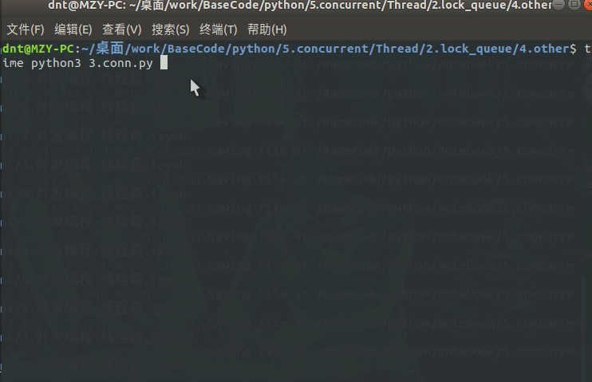
回调函数的回顾¶
利用Pool提供的callback和error_callback：
from time import sleep
from multiprocessing.dummy import Pool as ThreadPool
def get_data(id):
print(f"正在请求API，ID={id}")
sleep(1)
return f"{id}-Data"
def save_data(data):
sleep(1)
print(f"保存数据：{data}")
def main():
pool = ThreadPool()
# 每一个执行完毕后处理
for i in range(10):
pool.apply_async(get_data, args=(i, ), callback=save_data)
pool.close()
pool.join()
if __name__ == '__main__':
main()
输出：
正在请求API，ID=0
正在请求API，ID=1
正在请求API，ID=3
正在请求API，ID=2
正在请求API，ID=4
保存数据：3-Data
正在请求API，ID=5
保存数据：4-Data
正在请求API，ID=6
保存数据：5-Data
正在请求API，ID=7
保存数据：1-Data
正在请求API，ID=8
保存数据：7-Data
正在请求API，ID=9
保存数据：6-Data
保存数据：8-Data
保存数据：0-Data
保存数据：2-Data
保存数据：9-Dat
real 0m11.096s
user 0m0.075s
sys 0m0.013s如果想要简单的并行并且返回结果统一处理，可以把：
# 每一个执行完毕后执行save_data
for i in range(10):
pool.apply_async(get_data, args=(i, ), callback=save_data)
换成：
# 全部执行完毕后执行save_data
pool.map_async(get_data, range(10), callback=save_data)
输出：（联想一条条插入数据和批量插入数据）
正在请求API，ID=0
正在请求API，ID=1
正在请求API，ID=2
正在请求API，ID=3
正在请求API，ID=4
正在请求API，ID=5
正在请求API，ID=7
正在请求API，ID=6
正在请求API，ID=8
正在请求API，ID=9
保存数据：['0-Data', '1-Data', '2-Data', '3-Data', '4-Data', '5-Data', '6-Data', '7-Data', '8-Data', '9-Data']
real 0m4.069s
user 0m0.061s
sys 0m0.009s扩展：timer¶
先看一个简单案例：
from time import sleep
from threading import Timer
def test(obj):
print(f"timer开始执行~ {obj}")
sleep(1)
print(f"timer执行完毕~ {obj}")
def main():
t = Timer(2, test, args=("mmd", ))
t.start()
# t.join() # 加这句，主线程就会等待timer执行完毕后退出
# t.cancel() # 停止timer
print("主线程over")
if __name__ == '__main__':
main()
输出：
主线程over
timer开始执行~ mmd
timer执行完毕~ mmd
real 0m3.063s
user 0m0.043s
sys 0m0.004s运行图示： 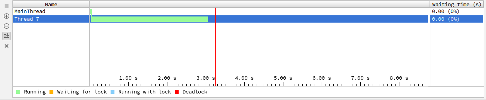
咱们看看源码是怎么回事：
class Timer(Thread):
def __init__(self, interval, function, args=None, kwargs=None):
Thread.__init__(self)
self.interval = interval
self.function = function
self.args = args if args is not None else []
self.kwargs = kwargs if kwargs is not None else {}
self.finished = Event() # 事件标记
def cancel(self):
self.finished.set() # 事件标记为True（is_set）
def run(self):
self.finished.wait(self.interval) # 限时等
# 没有被取消就执行方法
if not self.finished.is_set():
self.function(*self.args, **self.kwargs)
self.finished.set() # 完成标记
原来timer是在线程的基础上封装了一下。利用Event来标记完成/取消与否，与之前讲的定时器不太一样（点我回顾：Signal信号）
Timer类是Thread的子类。Timers和线程的启动方式一样，调用其start()方法。timer可以在动作执行前调用其cancel()取消其执行。imer有点像定时器，启动一个线程，定时执行某个任务。此外，Timer还可以处理各种超时情况～比如终结subprocess创建的进程(p.kill())
再来个定时执行的案例：
from threading import Timer
def test(name):
print(f"我是牛逼牛逼哄哄的~{name}")
timer = Timer(2, test, args=("小明",))
timer.start()
if __name__ == "__main__":
t = Timer(2, test, ("小明",)) # Thread(target=test, args=("小明",))
t.start()
输出：（可以思考比死循环好在哪？提示：wait）
我是牛逼牛逼哄哄的~小明
我是牛逼牛逼哄哄的~小明
我是牛逼牛逼哄哄的~小明
我是牛逼牛逼哄哄的~小明
我是牛逼牛逼哄哄的~小明
........2.2.9.线程同步~Barrier¶
官方文档：https://docs.python.org/3/library/threading.html#barrier-objects
提供了一个简单的同步原语(机制)，供需要相互等待的固定数量的线程使用。每个线程都试图通过调用wait()方法来传递屏障，并将阻塞直到所有线程都进行了wait()调用。此时，线程同时释放。
看一个官方案例：（同步客户端和服务器线程）
b = Barrier(2, timeout=5)
def server():
start_server()
b.wait()
while True:
connection = accept_connection()
process_server_connection(connection)
def client():
b.wait()
while True:
connection = make_connection()
process_client_connection(connection)
说到这个不得不提一下我们Queue引入篇自己模拟的伪CountDownLatch，两者异同之处不少，下面贴了参考链接可以课外拓展一下，大体区别是一个是等待线程组且不可重用，另一个是等待多个线程且可重用(Barrier)。有点像跑步比赛，大家都准备好（全都调用了wait），才允许一起跑（执行）【区别无非是一组起跑还是多组起跑】
很显然，上面那个模拟并发的例子使用Barrier更简单和应景（也是基于Condition封装的，比我们封装的更完美）
from multiprocessing.dummy import threading
count = 100 # 库存100件
bar = threading.Barrier(1000, timeout=5)
def shopping(id):
global count, bar
try:
bar.wait() # Barrier wait
except threading.BrokenBarrierError as ex:
print(ex)
except Exception as ex:
print(ex)
# 乐观锁
if count > 0: # if count - 1 >= 0:
count -= 1
print(f"线程{id}~抢到一件商品\n")
def main():
t_list = [threading.Thread(target=shopping, args=(i,)) for i in range(1000)]
print("准备开抢ing")
for t in t_list:
t.start()
for t in t_list:
t.join()
print(f"剩余库存{count}")
if __name__ == '__main__':
main()
输出：(如果使用Pool，记得指定线程数，不然就给自己挖坑了)
准备开抢ing
线程999~抢到一件商品
线程0~抢到一件商品
线程2~抢到一件商品
线程6~抢到一件商品
线程9~抢到一件商品
线程12~抢到一件商品
线程13~抢到一件商品
线程15~抢到一件商品
线程18~抢到一件商品
线程21~抢到一件商品
.........
线程399~抢到一件商品
线程408~抢到一件商品
线程318~抢到一件商品
线程396~抢到一件商品
线程432~抢到一件商品
剩余库存0
real 0m0.531s
user 0m0.191s
sys 0m0.125sclass threading.Barrier(parties, action=None, timeout=None)
parties指定需要等待的线程数action是一个可调用的，当它被提供时，它们将在它们全部进入屏障之后并且在释放所有线程之前由其中一个线程调用。- 如果提供
timeout，则将其用作所有后续wait()调用的默认值
常见方法：
bar.parties：同步的线程数bar.wait(timeout=None)等待线程大部队到齐bar.reset()：重置Barrier。所有处于等待的线程都会收到BrokenBarrierError异常bar.abort()：将屏障置于终止状态。这会导致调用wait()的线程引发BrokenBarrierError（为了防止某一个进程意外终止，会造成整个进程的死锁。建议在创建Barrier指定超时时间）bar.n_waiting：有多少个线程处于等待状态bar.broken：如果屏障处于损坏状态，则为布尔值为True
参考文章：
控制台颜色输出：
https://www.cnblogs.com/hellojesson/p/5961570.html
CountDownLatch与CyclicBarrier
http://www.cnblogs.com/dolphin0520/p/3920397.html
https://blog.csdn.net/a347911/article/details/53465445
https://blog.csdn.net/carson0408/article/details/79471490
https://blog.csdn.net/zzg1229059735/article/details/611916792.3.深入篇¶
2.3.1.GIL¶
1.引入¶
什么都先不说，先看一个对比案例来引入：
Python：
def main():
while 1:
pass
if __name__ == '__main__':
main()
运行后HTOP信息：python3 1.GIL_Test.py
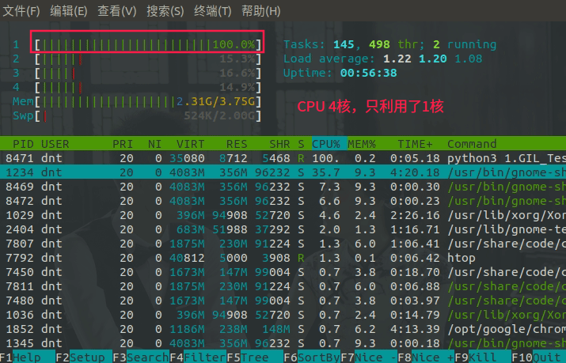
有人可能会反驳了，这是啥测试，多线程都没用到怎么体现多核？不急，再看一个案例：（注意看htop显示的commad）
from os import cpu_count
from multiprocessing.dummy import Pool
def test(i):
print(f"线程{i}开始死循环～")
while True:
pass
def main():
pool = Pool() # 默认是系统核数
# 我是4核，你改成4或者大于4都一样，等会说为啥
pool.map_async(test, range(cpu_count()))
pool.close()
pool.join()
if __name__ == '__main__':
main()
看看内核使用情况～乍一看，好像是利用了多核，好好算一下==>加起来差不多就是单核CPU的100%嘛...
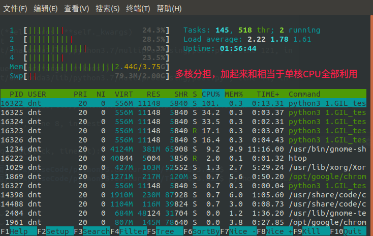
来看看为什么不影响：（改成5）【要想把N核CPU的核心全部跑满，就必须启动N个死循环线程】
def main():
pool = Pool(5) # 默认是系统核数
pool.map_async(test, range(5))
pool.close()
pool.join()
效果：（还是单核CPU充分利用） 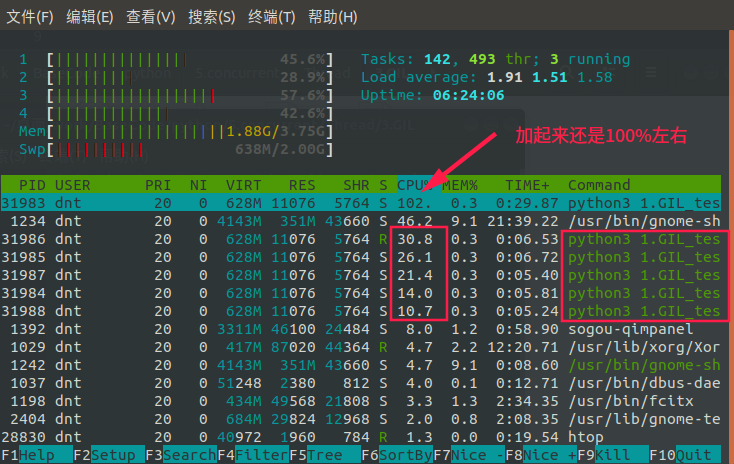
那其他语言是不是也这样？以NetCore为例：dotnet new console -o testGIL
class Program
{
static void Main(string[] args)
{
var list = new List<int>() { 1, 2, 3, 4, 5 };
var tasks = list.AsParallel().Select(i => Task.Run(() => Test(i))).ToArray();
Task.WhenAll(tasks).Wait(); // 等待所有Task完成才结束
}
static void Test(int i)
{
System.Console.WriteLine($"启动线程{i}");
while (true) { }
}
}
运行后HTOP信息：dotnet testGIL.dll
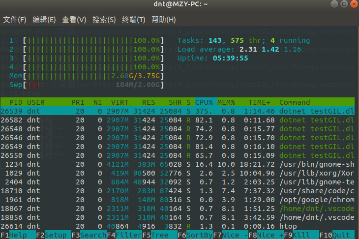
现在Java和Python都在模仿Net的一些优雅新语法，比如异步这块。如果你用的还是那么繁琐低效那真的好好反思一下了
如果记不得Net的知识可以点我回顾：https://www.cnblogs.com/dotnetcrazy/p/9426279.html#NetCore并发编程
2.最简单的优化～线程变进程¶
最常见方法：线程变进程，因为是Linux，进程和线程不像Win那样性能相差那么大，其实上面代码都可以不动，就改一个地方：multiprocessing.dummy=>multiprocessing
from os import cpu_count
from multiprocessing import Pool # 就改下这就ok了
def test(i):
print(f"进程{i}开始死循环～")
while True:
pass
def main():
pool = Pool() # 默认是系统核数
pool.map_async(test, range(cpu_count()))
pool.close()
pool.join()
if __name__ == '__main__':
main()
现在看看效果： 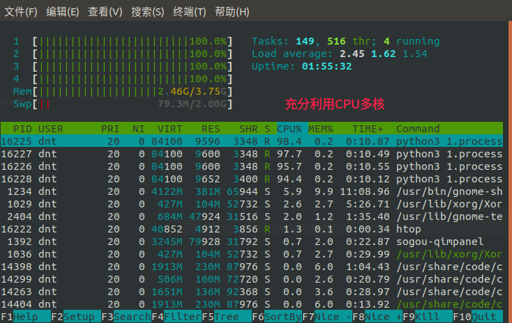
很多人编程都只是利用了单核，对于今天这个多核遍布的时代，着实有点可惜了（自己买的云服务器基本上都是1核1G或者1核2G的，编程语言性能相差不大，企业用就得深入探讨优化了～）
说说GIL¶
Code：https://github.com/lotapp/BaseCode/tree/master/python/5.concurrent/Thread/3.GIL
尽管Python完全支持多线程编程， 但是解释器的C语言实现部分在完全并行执行时并不是线程安全的，所以这时候才引入了GIL
解释器被一个全局解释器锁保护着，它确保任何时候都只有一个Python线程执行(保证C实现部分能线程安全) GIL最大的问题就是Python的多线程程序并不能利用多核CPU的优势 （比如一个使用了多个线程的计算密集型程序只会在一个单CPU上面运行）
注意：GIL只会影响到那些严重依赖CPU的程序（比如计算型的）如果你的程序大部分只会涉及到I/O，比如网络交互，那么使用多线程就很合适 ~ 因为它们大部分时间都在等待（线程被限制到同一时刻只允许一个线程执行这样一个执行模型。GIL会根据执行的字节码行数和时间片来释放GIL，在遇到IO操作的时候会主动释放权限给其他线程）
所以Python的线程**更适用于处理`I/O`和其他需要并发执行的阻塞操作，而不是需要多处理器并行的计算密集型任务**（对于IO操作来说，多进程和多线程性能差别不大）【计算密集现在可以用Python的`Ray`框架】
网上摘取一段关于IO密集和计算密集的说明：（IO密集型可以结合异步）
计算密集型任务的特点是要进行大量的计算，消耗CPU资源，比如计算圆周率、对视频进行高清解码等等，全靠CPU的运算能力。这种计算密集型任务虽然也可以用多任务完成，但是任务越多，花在任务切换的时间就越多，CPU执行任务的效率就越低，所以，要最高效地利用CPU，计算密集型任务同时进行的数量应当等于CPU的核心数。
计算密集型任务由于主要消耗CPU资源，因此，代码运行效率至关重要。Python这样的脚本语言运行效率很低，完全不适合计算密集型任务。对于计算密集型任务，最好用C语言编写。
第二种任务的类型是IO密集型，涉及到网络、磁盘IO的任务都是IO密集型任务，这类任务的特点是CPU消耗很少，任务的大部分时间都在等待IO操作完成（因为IO的速度远远低于CPU和内存的速度）。对于IO密集型任务，任务越多，CPU效率越高，但也有一个限度。常见的大部分任务都是IO密集型任务，比如Web应用。
IO密集型任务执行期间，99%的时间都花在IO上，花在CPU上的时间很少，因此，用运行速度极快的C语言替换用Python这样运行速度极低的脚本语言，完全无法提升运行效率。对于IO密集型任务，最合适的语言就是开发效率最高（代码量最少）的语言，脚本语言是首选，C语言最差。Process and Thread Test¶
其实用不用多进程看你需求，不要麻木使用，Linux下还好点，Win下进程开销就有点大了（好在服务器基本上都是Linux，程序员开发环境也大多Linux了）这边只是简单测了个启动时间差距就来了，其他的都不用测试了
测试Code：
from time import sleep
from multiprocessing import Process
def test(i):
sleep(1)
print(i)
def main():
t_list = [Process(target=test, args=(i, )) for i in range(1000)]
for t in t_list:
t.start()
if __name__ == '__main__':
main()
运行时间：
real 0m3.980s
user 0m2.034s
sys 0m3.119s操作系统几千个进程开销还是有点大的（毕竟进程是有上线的）ulimit -a
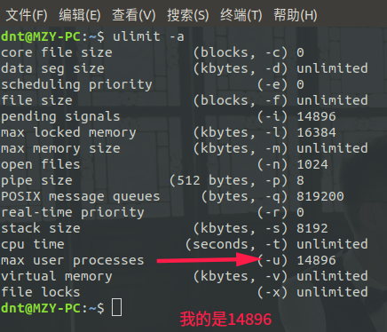
测试Code：
from time import sleep
from multiprocessing.dummy import Process
def test(i):
sleep(1)
print(i)
def main():
t_list = [Process(target=test, args=(i, )) for i in range(1000)]
for t in t_list:
t.start()
if __name__ == '__main__':
main()
运行时间：
real 0m1.130s
user 0m0.158s
sys 0m0.095smultiprocessing.dummy里面的Process上面也说过了，就是在线程基础上加点东西使得用起来和multiprocessing的Process编程风格基本一致（本质还是线程）
测试Code:
from time import sleep
from multiprocessing.dummy import threading
def test(i):
sleep(1)
print(i)
def main():
t_list = [threading.Thread(target=test, args=(i, )) for i in range(1000)]
for t in t_list:
t.start()
if __name__ == '__main__':
main()
运行时间：
real 0m1.123s
user 0m0.154s
sys 0m0.085s其实Redis就是使用单线程和多进程的经典，它的性能有目共睹。所谓性能无非看个人能否充分发挥罢了。不然就算给你轰炸机你也不会开啊？扎心不老铁～
PS：线程和进程各有其好处，无需一棍打死，具体啥好处可以回顾之前写的进程和线程篇～
3.利用共享库来扩展¶
C系扩展¶
GIL是Python解释器设计的历史遗留问题，多线程编程，模型复杂，容易发生冲突，必须用锁加以隔离，同时，又要小心死锁的发生。Python解释器由于设计时有GIL全局锁，导致了多线程无法利用多核。计算密集型任务要真正利用多核，除非重写一个不带GIL的解释器（PyPy）如果一定要通过多线程利用多核，可以通过C扩展来实现（Python很多模块都是用C系列写的，所以用C扩展也就不那么奇怪了）
只要用C系列写个简单功能（不需要深入研究高并发），然后使用ctypes导入使用就行了：
#include <stdio.h>
void test()
{
while(1){}
}
编译成共享库：gcc 2.test.c -shared -o libtest.so
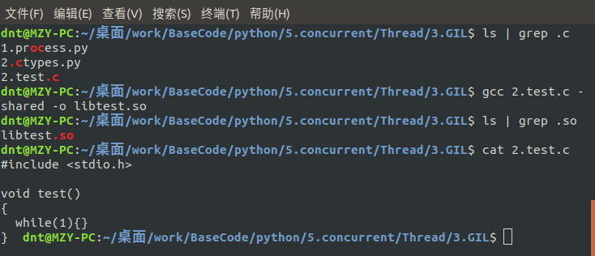
使用Python运行指定方法：（太方便了，之前一直以为C#调用C系列最方便，用完Python才知道更简方案）
from ctypes import cdll
from os import cpu_count
from multiprocessing.dummy import Pool
def main():
# 加载C共享库（动态链接库）
lib = cdll.LoadLibrary("./libtest.so")
pool = Pool() # 默认是系统核数
pool.map_async(lib.test, range(cpu_count()))
pool.close()
pool.join()
if __name__ == '__main__':
main()
看看这时候HTOP的信息：（充分利用多核）【ctypes在调用C时会自动释放GIL】 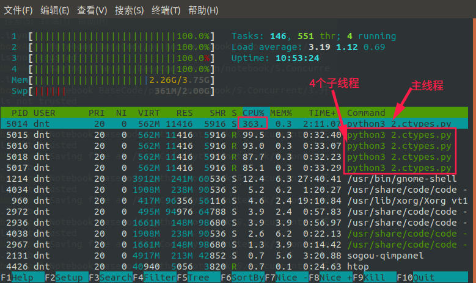
Go扩展¶
利用Go写个死循环，然后编译成so动态链接库（共享库）：
package main
import "C"
//export test
func test(){
for true{
}
}
func main() {
test()
}
**非常重要的事情：`//export test`一定要写，不然就被自动改成其他名字（我当时被坑过）**
Python调用和上面一样：
from ctypes import cdll
from os import cpu_count
from multiprocessing.dummy import Pool
def main():
# 加载动态链接库
lib = cdll.LoadLibrary("./libtestgo.so")
pool = Pool() # 默认是系统核数
pool.map_async(lib.test, range(cpu_count()))
pool.close()
pool.join()
if __name__ == '__main__':
main()
效果：go build -buildmode=c-shared -o libtestgo.so 2.test.go
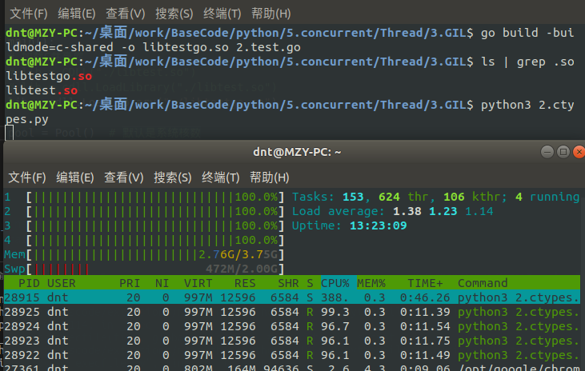
题外话～如果想等CPython的GIL消失可以先看一个例子：MySQL把大锁改成各个小锁花了5年。在是在MySQL有专门的团队和公司前提下，而Python完全靠社区重构就太慢了
速度方面微软除外，更新快本来是好事，但是动不动断层更新，这学习成本就太大了(这也是为什么Net能深入的人比较少的原因：人家刚深入一个，你就淘汰一个了...)
可能还有人不清楚，贴下官方推荐技术吧（NetCore、Orleans、EFCore、ML.Net、CoreRT）
https://github.com/aspnet/AspNetCore
https://github.com/aspnet/EntityFrameworkCore
https://github.com/dotnet/machinelearning
https://github.com/dotnet/orleans
https://github.com/aspnet/Mvc
https://github.com/dotnet/corert课外拓展：
用go语言给python3开发模块
https://www.jianshu.com/p/40e069954804
https://blog.filippo.io/building-python-modules-with-go-1-5
Python与C/C++相互调用
https://www.cnblogs.com/apexchu/p/5015961.html
使用C/C++代码编写Python模块
https://www.cnblogs.com/silvermagic/p/9087896.html
快速实现python c扩展模块
https://www.cnblogs.com/chengxuyuancc/p/6374239.html
Python的C语言扩展
https://python3-cookbook.readthedocs.io/zh_CN/latest/chapters/p15_c_extensions.html
python调用golang生成的so库
https://studygolang.com/articles/10228
https://www.cnblogs.com/huangguifeng/p/8931837.html
python调用golang并回调
https://blog.csdn.net/gtd138/article/details/79801235
Python3.x AttributeError: libtest.so: undefined symbol: fact
https://www.cnblogs.com/tanglizi/p/8965230.html4.运行在其他编译器上¶
先看最重要的一点，一旦运行在其他编译器意味着很多Python第三方库可能就不能用了，相对来说PyPy兼容性是最好的了
如果是Python2系列我推荐谷歌的grumpy
Grumpy是一个 Python to Go 源代码转换编译器和运行时。旨在成为CPython2.7的近乎替代品。关键的区别在于它将Python源代码编译为Go源代码，然后将其编译为本机代码，而不是字节码。这意味着Grumpy没有VM
已编译的Go源代码是对Grumpy运行时的一系列调用，Go库提供与 Python C API类似的目的如果是Python3系列，可以使用PyPy PythonNet Jython3 ironpython3等等
PyPy:https://bitbucket.org/pypy/pypy
Net方向：
https://github.com/pythonnet/pythonnet
https://github.com/IronLanguages/ironpython3Java方向：
https://github.com/jython/jython3Other：
源码：https://github.com/sbinet/go-python
参考：https://studygolang.com/articles/13019
可惜CoreRT一直没完善，不然就Happy了
https://github.com/dotnet/corert经验：平时基本上多线程就够用了，如果想多核利用-多进程基本上就搞定了（分布式走起）实在不行一般都是分析一下性能瓶颈在哪，然后写个扩展库
如果需要和其他平台交互才考虑上面说的这些项目。如果是Web项目就更不用担心了，现在哪个公司还不是混用？JavaScript and Python and Go or Java or NetCore。基本上上点规模的公司都会用到Python，之前都是Python and Java搭配使用，这几年开始慢慢变成Python and Go or NetCore搭配使用了~
下集预估：Actor模型 and 消息发布/订阅模型
2.3.2.Actor¶
1.Actor引入¶
可能有些朋友不清楚Actor是个啥？我们从场景来切入一下：
以之前小明小子互刷银行流水记录为例，开始是这么写：小明小张死锁问题
def transfer(p_from, p_to, money):
with p_from.lock:
p_from.money -= money
sleep(1) # 模拟网络延迟
with p_to.lock:
p_to += money
乍一看好像没问题，其实容易出现死锁现象，比如小明给小张转1000：
- 小明先获取自己的锁，然后准备获取小张的锁
- 这时候遇到小张给小明转账（小张把自己的锁先获取了）
- 于是就死锁了，图示： 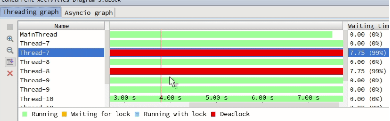
解决也很简单，前面也说了好几种方法，这边再说下Python独有的快速解决法：（完整版点我）
from contextlib import contextmanager # 引入上下文管理器
@contextmanager
def lock_manager(*args):
# 先排个序（按照id排序）
args = sorted(args, key=lambda x: id(x))
try:
for lock in args:
lock.acquire()
yield
finally:
# 先释放最后加的锁（倒序释放）
for lock in reversed(args):
lock.release()
调用就比较简单了：(通用方法点我)
def transfer(p_from, p_to, money):
with lock_manager(p_from.lock,p_to.lock):
p_from.money -= money
p_to += money
2.Actor概念¶
上面的引入用了线程的各种知识，很多新手都直接崩溃，又是死锁又是活锁接着还衍生出了算法以及线程安全、线程通信等等一大堆东西要掌握，那有没有一种简单的方法，把线程的概念隐藏起来，然后所有的操作都不用加锁呢？这样就是是新手也能快速上手了～有！这便是我们今天要说的Actor
那啥是Actor呢？咱们去PPT里画个简化版的图：
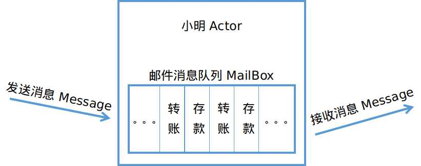
我存款就发个消息到MailBox里面，我转账也发个消息到MailBox里面。不管是有一个消息，还是有100个消息，我统统放到队列中，然后让Actor对象顺序处理，这样就我不用管什么锁不锁的也不用管别人了～
别人需要接收我的转账就到我的MailBox里面拉消息即可，要是我转账的时候余额不够了它就给我的MailBox里面发送条余额不够的消息
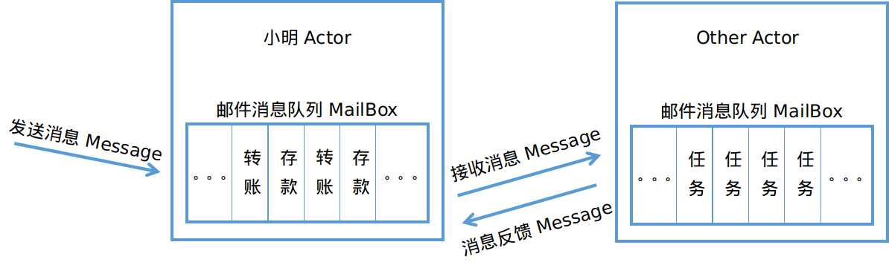
可能有些人会说了，那我用队列Queue不就得了，好像也差不多啊？看起来的确差不多，但是Queue是同步操作，就算用了异步发送消息也要监听和重试，太麻烦了～
其实你也可以把Actor理解为封装的Queue，要干什么就异步发个消息到Actor的MailBox里，这样就不是同步操作，而且也不用关注那些杂七杂八的东西了。
切换到进程也很方便，把Actor相互通信的Queue换成进程版的即可，想要分布式部署也一样，换成MQ或者Redis就好了，代码基本上不需要什么改动
概念汇总：
Actor：Actor之间不共享状态，但是会接收别的Actor发送的异步消息，处理的过程中，会改变内部状态，也可能向别的Actor发送消息
Message：消息是不可变的， 它的发送都是异步的，Actor内部有个MailBox来缓存消息
MailBox：Actor内部缓存消息的邮箱，其他Actor发送的消息都放到这里，然后被本Actor处理，类似有多个生产者和一个消费者的Queue
3.简单实现¶
精简版¶
先定义一个含有Actor、MailBox的精简版Actor：
from multiprocessing.dummy import Queue
class Actor(object):
def __init__(self):
# Actor内部的消息缓存队列
self.__mailbox = Queue()
def send(self, msg):
self.__mailbox.put(msg)
def recv(self):
return self.__mailbox.get()
if __name__ == '__main__':
xiaoming = Actor()
xiaoming.send("存款")
msg = xiaoming.recv()
print(msg)
输出：（通过send发送消息，通过recv接收消息）
存款简单版¶
用生成器(yield)实现一个简单版的：
def actor():
while True:
try:
msg = yield # 获取消息
print(msg, end="")
except RuntimeError:
print('Actor退出')
p = actor()
next(p) # 准备接收
p.send("你好～")
p.send("小明")
p.close()
输出：
你好～ 小明完善：和线程结合定义一个简单版的Actor（向用户屏蔽繁琐的线程）：
class ActorExit(Exception):
"""用来标记Actor退出（特殊的哨兵值）"""
pass
class BaseActor(object):
def __init__(self):
"""queue：Actor内部的邮箱队列"""
self.__mailbox = Queue()
def recv(self):
"""Actor接受消息"""
msg = self.__mailbox.get()
if msg is ActorExit:
# 抛出异常（模版方法会处理）
raise ActorExit
return msg
def send(self, msg):
"""Actor发送消息"""
self.__mailbox.put(msg)
def close(self):
"""发送结束标识"""
self.send(ActorExit)
def start(self):
self.__terminated_event = Event() # 为Join服务
t = threading.Thread(target=self.__templet)
t.setDaemon(True) # 设置为守护线程
t.start()
def __templet(self):
"""模版方法（run会被子类重写）"""
try:
self.run() # 执行Run代码
except ActorExit:
pass # 防止线程挂掉
finally:
# 设置Event标识
self.__terminated_event.set()
def join(self):
# Event在set之后便结束等待
self.__terminated_event.wait()
def run(self):
"""由子类实现即可"""
pass
现在再写小明小张转账互刷的Code就简单了：
from BaseActor import BaseActor
class PeopleActor(BaseActor):
def __init__(self):
super().__init__()
self.money = 5000 # 每个人有5000块
def run(self):
while True:
msg = self.recv()
# 转账msg为负，收账msg为正
if isinstance(msg, int):
self.money += msg
@classmethod
def transfer(cls, p_from, p_to, money):
p_from.send(-money)
p_to.send(money)
def main():
xiaoming = PeopleActor()
xiaozhang = PeopleActor()
xiaopan = PeopleActor()
# 批量启动
for actor in (xiaoming, xiaozhang, xiaopan):
actor.start()
print(f"[转账前]小张：{xiaozhang.money},小明：{xiaoming.money},小潘：{xiaopan.money}")
for i in range(5):
if i == 2:
# 【测试】转账过程中小潘还了小明500元
PeopleActor.transfer(xiaopan, xiaoming, 500)
# 小明转账1000给小张
PeopleActor.transfer(xiaoming, xiaozhang, 1000)
# 小张转账1000给小明
PeopleActor.transfer(xiaozhang, xiaoming, 1000)
print(f"[本次转账]小张:{xiaozhang.money},小明:{xiaoming.money},小潘:{xiaopan.money}")
for actor in (xiaoming, xiaozhang, xiaopan):
actor.close()
actor.join()
print(f"[转账后]小张：{xiaozhang.money},小明：{xiaoming.money},小潘：{xiaopan.money}")
if __name__ == '__main__':
main()
输出：（都不用引入Queue、Thread这些了）
[转账前]小张：5000,小明：5000,小潘：5000
[本次转账]小张:5000,小明:5000,小潘:5000
[本次转账]小张:5000,小明:5000,小潘:5000
[本次转账]小张:5000,小明:5000,小潘:5000
[本次转账]小张:5000,小明:5500,小潘:4500
[本次转账]小张:5000,小明:5500,小潘:4500
[转账后]小张：5000,小明：5500,小潘：4500扩展部分¶
执行对应方法¶
Actor的魅力就在于它的简单，你只需要send和recv其他复杂的部分根本不用过问，扩展也比较方便，比如以元组形式传递标签消息，让actor执行不同的操作：
from BaseActor import BaseActor
class TagActor(BaseActor):
def run(self):
while True:
tag, *args = self.recv()
getattr(self, 'do_' + tag)(*args)
def do_A(self, x):
print('方法A', x)
def do_B(self, x, y):
print('方法B', x, y)
if __name__ == '__main__':
a = TagActor()
a.start()
a.send(('A', 1)) # Invokes do_A(1)
a.send(('B', 2, 3)) # Invokes do_B(2,3)
a.close()
a.join()
输出：
方法A 1
方法B 2 3执行指定方法并返回¶
先不看怎么写，遇到这种需求首先看看平时怎么用的，以Net为例，联想到Task：
task = Task.Run(xxx)
task.Result # 阻塞等
这样大体思路就有了，我们需要一个Actor类来处理执行和一个Result类返回最终结果：
from BaseActor import BaseActor
from multiprocessing.dummy import Event
class TaskResult(object):
def __init__(self):
self.__event = Event()
self.__result = None
def result(self):
# 阻塞等结果
self.__event.wait()
return self.__result
def set_result(self, value):
self.__result = value
self.__event.set() # 标记执行完毕
class ActorTask(BaseActor):
def apply_async(self, func, *args, **kwagrs):
self.r = TaskResult()
self.send((func, args, kwagrs))
return self.r
def run(self):
func, args, kvargs = self.recv()
# 执行指定方法并return返回值
value = func(*args, **kvargs)
self.r.set_result(value)
def test_add(a, b):
return a + b
actor = ActorTask()
actor.start()
task = actor.apply_async(test_add, 1, 2)
print(task.result())
actor.close()
actor.join()
Actor框架¶
Actor模型非常适用于多个组件独立工作，相互之间仅仅依靠消息传递的情况 如果想在多个组件之间维持一致的状态，那就不方便了，需要使用一些Actor的框架
Java最出名的就是Akka，这几年貌似 Quasar 用的挺多（如果有其他常用的Actor模型可以补充一下）
Net起初是用的Akka.Net，后来官方出了 Orleans
Golang现在是 ProtoActor 比较火，支持Go、Net、Python、JS、Java，一般混合编程的公司都会选择这款
https://github.com/AsynkronIT/protoactor-go
https://github.com/AsynkronIT/protoactor-dotnet
https://github.com/AsynkronIT/protoactor-dotnetPython以前Pykka比较火，现在更推荐 Ray or pulsar
https://quantmind.github.io/pulsar
https://github.com/quantmind/pulsar
https://github.com/ray-project/ray
https://ray.readthedocs.io/en/latest进一步理解Actor可以阅读以下源码：
https://github.com/jodal/pykka
https://github.com/kquick/Thespian
https://github.com/tamland/python-actors
https://github.com/xinhuang/async-actor2.3.3.发布订阅¶
上节回顾：线程篇～Actor专题
看个需求：你有一个基于线程通信的程序，想让它们实现发布/订阅模式的消息通信
这个有点像生产消费者模型，但要实现发布/订阅的消息通信模式，通常要引入一个单独的网关|交换机对象作为所有消息的中介
PS：我们一般不直接将消息从一个任务发送到另一个，而是将其发送给网关|交换机， 然后由它发送给一个或多个被关联任务
通俗讲：
- 一个交换机就是维护订阅者的集合
- 提供绑定（
attach）解绑（detach）发送（send）这些方法 - 每个交换机通过一个
key来定位（get_exchange(key)返回一个Exchange对象） - 批量通知订阅者可以把消息发送给一个指定
key的交换机- 然后交换机会将它们发送给被绑定的订阅者
看个例子：
from collections import defaultdict # dict的子类
# 交换机（发布者）
class Exchange(object):
def __init__(self):
# 订阅者集合
self.__subscribers = set()
# 添加一个Task到订阅者集合中
def attach(self, task):
self.__subscribers.add(task)
# 把Task从订阅者集合中移除
def detach(self, task):
self.__subscribers.remove(task)
def send(self, msg):
for subscriber in self.__subscribers:
# 调用订阅者里面的send方法
subscriber.send(msg)
exchange_dict = defaultdict(Exchange)
def get_exchange(key):
return exchange_dict[key]
# 定义一个Task
class BaseTask(object):
def send(self, msg):
print(msg)
# 比如获取一个key是shop的交换机
exc = get_exchange("shop")
# 然后把任务1和2添加到交换机内
task1 = BaseTask()
task2 = BaseTask()
exc.attach(task1)
exc.attach(task2) # 分离使用：detach
# 这时候要是群发消息就简单了：
exc.send("test")
订阅者可能和交换机不在同一个机器上，这时候想显示log输出就需要设置下：
其实也很简单，在交换机这台PC上弄个订阅者即可：
# 交换机上的订阅者
class PrintMessages:
def __init__(self):
self.count = 0
def send(self, msg):
self.count += 1
print(f"msg[{self.count}]: {msg}")
exc = get_exchange('shop')
exc.attach(PrintMessages())
# 定义一个Task
class BaseTask(object):
def send(self, msg):
print(msg)
# 比如获取一个key是shop的交换机
exc = get_exchange("shop")
# 然后把任务1和2添加到交换机内（模拟其他PC的订阅者）
task1 = BaseTask()
task2 = BaseTask()
exc.attach(task1)
exc.attach(task2) # 分离使用：detach
# 这时候要是群发消息就简单了：
exc.send("test")
PS：注意一个交换机可能存在的Bug（对于订阅者的正确绑定和解绑：为了正确的管理资源，每一个绑定的订阅者必须最终要解绑）
exc = get_exchange('key')
exc.attach(some_task)
try:
...
finally:
exc.detach(some_task)
这个和使用文件、锁等很像，如果怕忘记，可以借助上下文管理器在交换机上添加个方法
eg，以上面代码为例，进行改造：
from contextlib import contextmanager
from collections import defaultdict
class Exchange(object):
# 定义一个订阅者集合
def __init__(self):
self.__subscribers = set()
# 定义一个附加任务的方法
def attach(self, task):
self.__subscribers.add(task)
# 定义一个分离任务的方法
def detach(self, task):
self.__subscribers.remove(task)
# 知识回顾：http://www.cnblogs.com/dotnetcrazy/p/9528315.html#锁专题扩展
@contextmanager
def subscribe(self, *tasks):
# 防止用户忘记解绑任务
for task in tasks:
self.attach(task)
# 不要放在循环内（容易出错）
try:
yield
finally:
for task in tasks:
self.detach(task)
# 批量调用订阅者们的send方法
def send(self, msg):
for subscribe in self.__subscribers:
subscribe.send(msg)
exchange_dict = defaultdict(Exchange)
def get_exchange(key):
return exchange_dict[key]
# 定义一个Task
class BaseTask(object):
def send(self, msg):
print(msg)
# 比如获取一个key是shop的交换机
exc = get_exchange("shop")
# 然后把任务1和2添加到交换机内
task1 = BaseTask()
task2 = BaseTask()
# 把任务批量扔进去即可
with exc.subscribe(task1, task2):
exc.send("test")
其实还可以各种扩展，比如：
- 交换机可以实现一整个消息通道集合或提供交换机名称的模式匹配规则
- 扩展到分布式计算程序中（eg：将消息路由到不同机器上的任务中）
GIL扩展¶
上次说了这么生成so共享库,然后通过ctypes模块来调用，简单回顾下：线程深入篇之～GIL专题
1.共享库的测试¶
之前有人问之前的方式是否跨平台，当时是在Ubuntu下的，我们现在去CentOS测试下：
首先确保系统是多核（单核测试没有意义） 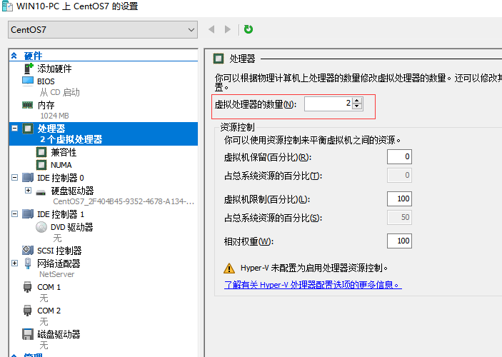
现在看下测试结果：（和Ubuntu效果一样，不需要修改任何代码） 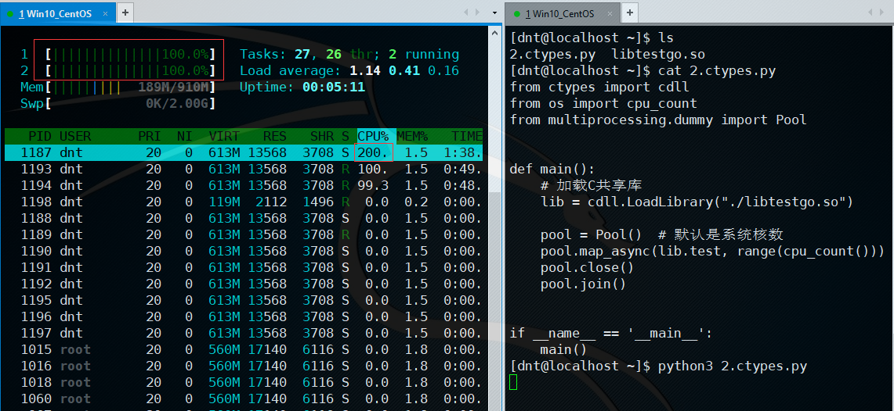
PS：CentOS7没有安装htop的：
yum install epel-release -y
yum install htop -y2.C编写Python3模块¶
现在准备说的是用C来写Python模块（方便使用）先看下应用场景：
- 提升性能（突破GIL）
- 核心业务代码保密
- 方便调用（比
ctypes的方式方便）
大概流程：
- 编写C系列代码
- 为了调用方便，把
c和python进行下类型转换（包裹函数） - 打包（
setup.py）
3.简单案例¶
Github地址：https://github.com/lotapp/BaseCode/tree/master/python/5.concurrent/Thread/3.GIL/Ext
1.先来个简单的案例：（你可以把C系列的三个文件放在一个里面）
#include <stdio.h>
// 模拟一个耗cpu的操作
int fib(int n)
{
if (n < 3)
return 1;
return fib(n - 1) + fib(n - 2);
}
int main(void)
{
printf("fib(30)=%d == 832040\n", fib(30));
return 0;
}
先测试下c文件有没有问题：gcc [-Wall] dnt.c -o dnt
fib(30)=832040 == 8320402.把对应的头文件也写一下：（这个可以参考golang生成动态库时产生的头文件）
#ifndef DNT_H_
#define DNT_H_
int fib(int n);
#endif
3.写一个包裹函数：pack.c（和Python2略有不同）
#include "Python.h" // 引入Python提供的头文件
#include "dnt.h" // 引入自己定义的头文件
// 模块名_函数名（调用的时候：dnt.fib(30)）
// 相当于：定义Python对应的函数名
static PyObject *dnt_fib(PyObject *self, PyObject *args)
{
int num;
// 把Python类型转换成C类型（用户传过来的参数）
if (!PyArg_ParseTuple(args, "i", &num))
return NULL;
// 把C返回类型转换成Python类型（PS:python定义变量不加修饰符）
// result = (PyObject *)Py_BuildValue("i", fib(num));
return (PyObject *)Py_BuildValue("i", fib(num));
}
// 这个就是一个映射关系（Python函数和C函数对应）
static PyMethodDef dntMethods[] = {
// {"函数名", 模块名_函数名, METH_VARARGS, "函数描述"},
// METH_VARARGS：告诉解释器调用约定用于C函数的标志
{"fib", dnt_fib, METH_VARARGS, "fib函数"}, // dnt.fib.__doc__
{NULL, NULL, 0, NULL} // 固定格式
};
// 模块定义
static struct PyModuleDef dntModule = {
PyModuleDef_HEAD_INIT,
"dnt",
NULL, // 模块文档
-1,
dntMethods // 映射数组
};
// 相当于init方法 PyMODINIT_FUNC
void PyInit_dnt(void)
{
PyModule_Create(&dntModule);
}
PS：安装过python3-dev才会有python.h（CentOS叫：python-devel）
Python和C对应的类型转换参数表¶
| 格式代码 | Python类型 | C系列类型 |
|---|---|---|
i |
int |
int |
l |
long |
long |
d |
float |
double |
c |
str |
char |
s |
str |
char * |
z |
str/None |
char */NULL |
D |
complex |
Py_Complex * |
O |
Any |
PyObject * |
S |
str |
PyStringObject * |
Py_BuildValue的用法表¶
Py_BuildValue("") None
Py_BuildValue("i", 123) 123
Py_BuildValue("iii", 123, 456, 789) (123, 456, 789)
Py_BuildValue("s", "hello") 'hello'
Py_BuildValue("y", "hello") b'hello'
Py_BuildValue("ss", "hello", "world") ('hello', 'world')
Py_BuildValue("s#", "hello", 4) 'hell'
Py_BuildValue("y#", "hello", 4) b'hell'
Py_BuildValue("()") ()
Py_BuildValue("(i)", 123) (123,)
Py_BuildValue("(ii)", 123, 456) (123, 456)
Py_BuildValue("(i,i)", 123, 456) (123, 456)
Py_BuildValue("[i,i]", 123, 456) [123, 456]
Py_BuildValue("{s:i,s:i}","abc", 123, "def", 456) {'abc': 123, 'def': 456}
Py_BuildValue("((ii)(ii)) (ii)",1, 2, 3, 4, 5, 6) (((1, 2), (3, 4)), (5, 6))
4.写一个Python的Setup：
from distutils.core import setup, Extension
mod_name = "dnt" # 模块名
setup(
name=mod_name,
ext_modules=[Extension(mod_name, sources=["dnt.c", "pack.c"])]
)
5.编译测试一下（python3 setup.py build python3 setup.py install）
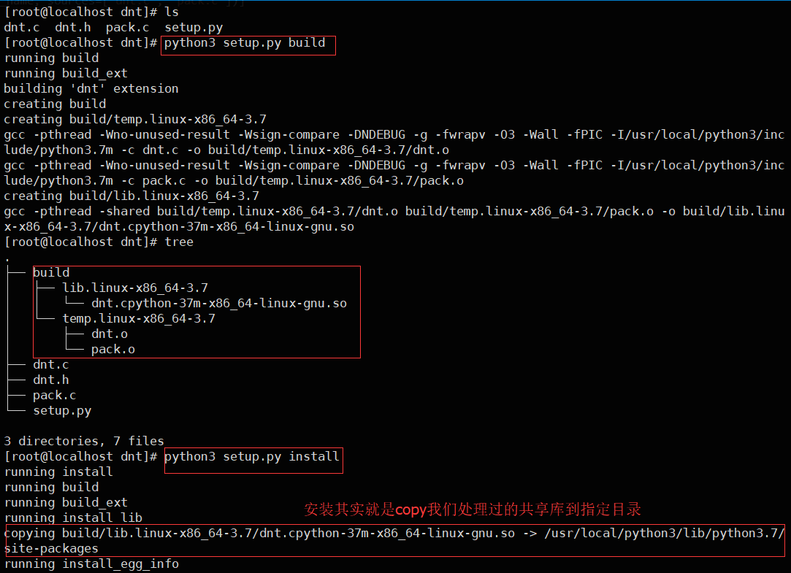
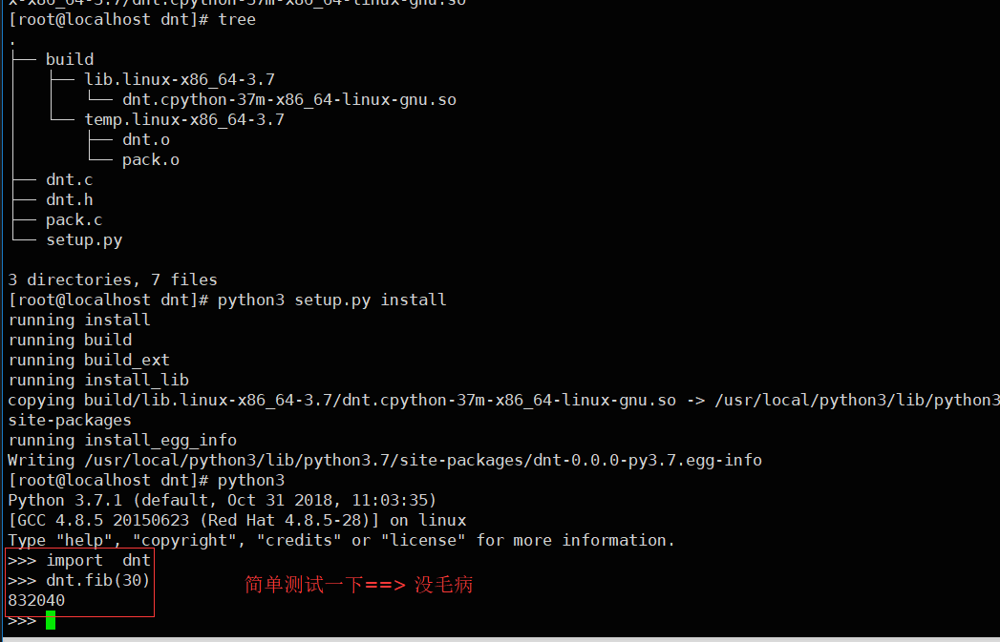
参考链接：
Python C-API参考手册：https://docs.python.org/3/c-api/index.html
用C系列扩展Python：https://docs.python.org/3/extending/extending.html
使用distutils构建C和C ++扩展：https://docs.python.org/3/extending/building.html
2.3.4.通用代码¶
官方文档：concurrent.futures--启动并行任务
上次说到了yield from，这次讲的这个就是基于线程/进程再结合yield的一个通用实现：（上节回顾：并发编程~协程演变过程）
这个是Python3.2开始有concurrent.futures模块，我们主要使用就2个类：ThreadPoolExecutor和ProcessPoolExecutor（本质上是对threading和multiprocessing进行了高级别的抽象，方便我们实现异步调用）
1.基础案例¶
通过使用以及看源码发现：传参和之前稍微有点不同
def submit(self, fn, *args, **kwargs)
def apply_async(self, func, args=(), kwds={}, callback=None, error_callback=None)
先看个简单的引入例子：（用法和Java一样）
import time
from concurrent.futures import ThreadPoolExecutor
def test(name, age):
print(name, age)
time.sleep(2)
return "test over"
def main():
with ThreadPoolExecutor() as executor:
# 也可以这么写：(*kwargs) submit(test, name="小明", age=23)
future = executor.submit(test, "小明", 23)
print(future, type(future))
result = future.result()
print(result)
print(future, type(future))
if __name__ == "__main__":
main()
输出：（可以通过task.done()查看任务是否执行完成）
小明 23
<Future at 0x19384bd7358 state=running> <class 'concurrent.futures._base.Future'>
test over
<Future at 0x19384bd7358 state=finished returned str> <class 'concurrent.futures._base.Future'>PoolExecutor可以指定线程|进程数，不指定默认是：
- 线程：cpu核数的5倍
- 进程：cpu核数
源码看下就懂了：
# 线程池
class ThreadPoolExecutor(_base.Executor):
def __init__(self, max_workers=None, thread_name_prefix='',
initializer=None, initargs=()):
# 线程：**cpu核数的5倍**
if max_workers is None:
max_workers = (os.cpu_count() or 1) * 5
# 进程池
class ProcessPoolExecutor(_base.Executor):
def __init__(self, max_workers=None, mp_context=None,
initializer=None, initargs=()):
# 线程：**cpu核数**
if max_workers is None:
self._max_workers = os.cpu_count() or 1
2.批量任务（as_completed）¶
来个批量请求的案例：
import time
import urllib.request
import concurrent.futures
url_list = [
"https://www.baidu.com", "https://www.qq.com", "https://www.sogou.com",
"https://www.cnblogs.com"
]
def get_html(url, timeout=10):
with urllib.request.urlopen(url, timeout=timeout) as conn:
return conn.read()
def main():
start_time = time.time()
with concurrent.futures.ThreadPoolExecutor() as executor:
# 用字典可以通过返回的 future 拿到 url
tasks = [executor.submit(get_html, url) for url in url_list]
# 遍历完成的 future 对象
for task in concurrent.futures.as_completed(tasks):
try:
result = task.result()
except Exception as ex:
print(ex)
else:
print(len(result))
print(time.time() - start_time)
if __name__ == "__main__":
main()
输出：
24414
227
47148
46635
0.2839970588684082PS：如果需要URL，可以这样搞：tasks = {executor.submit(get_html, url): url for url in url_list}
import time
import urllib.request
import concurrent.futures
url_list = [
"https://www.baidu.com", "https://www.qq.com", "https://www.sogou.com",
"https://www.cnblogs.com"
]
def get_html(url, timeout=10):
with urllib.request.urlopen(url, timeout=timeout) as conn:
return conn.read()
def main():
start_time = time.time()
with concurrent.futures.ThreadPoolExecutor() as executor:
# 用字典可以通过返回的 future 拿到 url
tasks = {executor.submit(get_html, url): url for url in url_list}
# 遍历完成的 future 对象
for task in concurrent.futures.as_completed(tasks):
url = tasks[task]
try:
result = task.result()
except Exception as ex:
print(ex)
else:
print(url, len(result))
print(time.time() - start_time)
if __name__ == "__main__":
main()
输出：(取得时候url = tasks[task])
https://www.baidu.com 227
https://www.sogou.com 24414
https://www.cnblogs.com 47148
https://www.qq.com 46635
0.28620719909667973.批量任务（map）¶
上面的代码用map可以快速实现：（灵活性比as_completed稍微差点，合适场景下倒是挺方便）
import time
import urllib.request
import concurrent.futures
url_list = [
"https://www.baidu.com", "https://www.qq.com", "https://www.sogou.com",
"https://www.cnblogs.com"
]
def get_html(url, timeout=10):
with urllib.request.urlopen(url, timeout=timeout) as conn:
return conn.read()
def main():
start_time = time.time()
with concurrent.futures.ThreadPoolExecutor() as executor:
for result in executor.map(get_html, url_list):
print(len(result))
print(time.time() - start_time)
if __name__ == "__main__":
main()
输出：（性能比as_completed高点）
227
46388
24414
46979
0.2785525321960449这种方式如果也想要获取到url，可以借助zip：
import time
import urllib.request
import concurrent.futures
url_list = [
"https://www.baidu.com", "https://www.qq.com", "https://www.sogou.com",
"https://www.cnblogs.com"
]
def get_html(url, timeout=10):
with urllib.request.urlopen(url, timeout=timeout) as conn:
return conn.read()
def main():
start_time = time.time()
with concurrent.futures.ThreadPoolExecutor() as executor:
for url, result in zip(url_list, executor.map(get_html, url_list)):
print(url, len(result))
print(time.time() - start_time)
if __name__ == "__main__":
main()
https://www.baidu.com 227
https://www.qq.com 46330
https://www.sogou.com 24414
https://www.cnblogs.com 47148
0.29399967193603516进程池的说明¶
和线程池用法一致，就换个名字而已(ProcessPoolExecutor)：
import time
import urllib.request
import concurrent.futures
url_list = [
"https://www.baidu.com", "https://www.qq.com", "https://www.sogou.com",
"https://www.cnblogs.com"
]
def get_html(url, timeout=10):
with urllib.request.urlopen(url, timeout=timeout) as conn:
return conn.read()
def main():
with concurrent.futures.ProcessPoolExecutor() as executor:
# 用字典可以通过返回的 future 拿到 url
tasks = {executor.submit(get_html, url): url for url in url_list}
# 遍历完成的 future 对象
for task in concurrent.futures.as_completed(tasks):
url = tasks[task]
try:
result = task.result()
except Exception as ex:
print(ex)
else:
print(url, len(result))
if __name__ == "__main__":
main()
输出：
https://www.sogou.com 24414
https://www.baidu.com 227
https://www.cnblogs.com 47148
https://www.qq.com 46364流程图解说¶
官方给的系统执行流程：https://github.com/python/cpython/blob/3.7/Lib/concurrent/futures/process.py
|======================= In-process =====================|== Out-of-process ==|
+----------+ +----------+ +--------+ +-----------+ +---------+
| | => | Work Ids | | | | Call Q | | Process |
| | +----------+ | | +-----------+ | Pool |
| | | ... | | | | ... | +---------+
| | | 6 | => | | => | 5, call() | => | |
| | | 7 | | | | ... | | |
| Process | | ... | | Local | +-----------+ | Process |
| Pool | +----------+ | Worker | | #1..n |
| Executor | | Thread | | |
| | +----------- + | | +-----------+ | |
| | <=> | Work Items | <=> | | <= | Result Q | <= | |
| | +------------+ | | +-----------+ | |
| | | 6: call() | | | | ... | | |
| | | future | | | | 4, result | | |
| | | ... | | | | 3, except | | |
+----------+ +------------+ +--------+ +-----------+ +---------+引用一下官方分析：
executor.map会创建多个_WorkItem对象，每个对象都传入了新创建的一个Future对象- 把每个
_WorkItem对象然后放进一个叫做Work Items的dict中，键是不同的Work Ids - 创建一个管理
Work Ids队列的线程Local worker thread它能做2件事：- 从
Work Ids队列中获取Work Id通过Work Items找到对应的_WorkItem如果这个Item被取消了，就从Work Items里面把它删掉，否则重新打包成一个_CallItem放入Call Q队列中,而executor的那些进程会从队列中取_CallItem执行，并把结果封装成_ResultItems放入Result Q队列中 - 从
Result Q队列中获取_ResultItems，然后从Work Items更新对应的Future对象并删掉入口
- 从
有了我们前面讲的知识，你再读concurrent.futures模块真的很轻松，大家有空可以去看看
Future对象¶
简单看下Future对象：
cancel()：尝试去取消调用。如果调用当前正在执行，不能被取消(返回False)- 成功返回True，失败返回False
cancelled()：如果调用被成功取消返回Truerunning()：如果当前是否正在执行done()：执行成功|被取消后result(Timeout = None)：拿到调用返回的结果（阻塞等）exception(timeout=None)：捕获程序执行过程中的异常add_done_callback(fn)：将fn绑定到future对象上。当future对象被取消或完成运行时，fn函数将会被调用
done()和cancel()案例：¶
import time
from concurrent.futures import ThreadPoolExecutor
def test(name, age):
print(name, age)
time.sleep(2)
return "test over"
def main():
with ThreadPoolExecutor(1) as executor:
future1 = executor.submit(test, "小明", 23)
future2 = executor.submit(test, "小张", 25)
print(f"任务1是否完成：{future1.done()}，任务2是否完成：{future2.done()}")
print(f"任务2取消成功：{future2.cancel()}")
print(f"任务1是否完成：{future1.done()}，任务2是否完成：{future2.done()}")
result = future1.result()
print(result)
print(f"任务1是否完成：{future1.done()}，任务2是否完成：{future2.done()}")
if __name__ == "__main__":
main()
输出：
小明 23
任务1是否完成：False，任务2是否完成：False
任务2取消成功：True
任务1是否完成：False，任务2是否完成：True
test over
任务1是否完成：True，任务2是否完成：Truewait()说明¶
知识点其实就这么多了，其他的后面结合协程会继续说的，然后还有一个wait的用法简单说说：
import time
import urllib.request
import concurrent.futures
def get_html(url):
with urllib.request.urlopen(url) as conn:
return conn.read()
def main():
url_list = [
"https://www.baidu.com", "https://www.qq.com", "https://www.sogou.com",
"https://www.cnblogs.com"
]
with concurrent.futures.ThreadPoolExecutor() as executor:
tasks = {executor.submit(get_html, url): url for url in url_list}
# 等待全部完成
concurrent.futures.wait(tasks)
# 我们来看看状态
for task in tasks:
print(task.done())
if __name__ == "__main__":
main()
输出：（wait默认是等待全部完成）
True
True
True
True指定等待的参数：
import time
import urllib.request
import concurrent.futures
def get_html(url):
with urllib.request.urlopen(url) as conn:
return conn.read()
def main():
url_list = [
"https://www.baidu.com", "https://www.qq.com", "https://www.sogou.com",
"https://www.cnblogs.com"
]
with concurrent.futures.ThreadPoolExecutor() as executor:
tasks = {executor.submit(get_html, url): url for url in url_list}
# FIRST_COMPLETED：等待第一个完成就返回
done_set, no_done_set = concurrent.futures.wait(
tasks, return_when=concurrent.futures.FIRST_COMPLETED)
# 返回值是 `done=true的set集合` 和 `done=false的set` 组成的元组
print(done_set) # 可以根据对应的set，进行相应处理
print(no_done_set) # 可以根据对应的set，进行相应处理
# 我们来看看状态
for task in tasks:
print(task.done())
if __name__ == "__main__":
main()
输出：（返回值是 done=true的set集合 和 done=false的set 组成的元组）
{<Future at 0x24c30609b00 state=finished returned bytes>}
{<Future at 0x24c30137c18 state=running>, <Future at 0x24c306090f0 state=running>, <Future at 0x24c30609ef0 state=running>}
False
False
True
Falseexception and add_done_callback¶
来个案例：
import concurrent.futures
def test1(name):
print(name)
return "姓名：" + name
def test2(name):
raise Exception("我发送异常了！")
def call_back(future):
ex = future.exception()
if ex:
print(ex)
else:
print(future.result())
def main():
with concurrent.futures.ThreadPoolExecutor() as executor:
future1 = executor.submit(test1, "小明")
future2 = executor.submit(test2, "小张")
future1.add_done_callback(call_back)
future2.add_done_callback(call_back)
if __name__ == "__main__":
main()
输出：
小明
姓名：小明
我发送异常了！有这几种常见的异常：
concurrent.futures.CancelledErrorconcurrent.futures.TimeoutErrorconcurrent.futures.process.BrokenProcessPool
写在最后的话：线程现在虽然说了很多东西，其实等讲到了协程后，线程就基本上不太用了，基本上都是进程+协程
用线程和进程的话基本上也是用最后说的通用方法，而什么时候用线程和进程这就看是否耗CPU（eg：计算、图片处理这些进程处理可以充分发挥cpu性能）
参考文档：
可以参考官方测试案例：
https://github.com/lotapp/cpython3/blob/master/Lib/test/_test_multiprocessing.py
线程之线程同步（C系）
http://www.cnblogs.com/nufangrensheng/p/3521654.html
Python多线程——线程同步机制（只是列举方法）
http://www.cnblogs.com/Security-Darren/p/4732914.html
Queue模块及源码分析
http://blog.51cto.com/11026142/1867877
http://blog.51cto.com/11026142/1879245
Python多进程通信Queue、Pipe、Value、Array实例
https://www.jb51.net/article/57666.htm
理解Python并发编程一篇就够了 | 进程篇+线程篇
https://blog.csdn.net/crisschan/article/details/53838622
https://blog.csdn.net/crisschan/article/details/53838420
Cpython解释器下实现并发编程——多进程、多线程、协程、IO模型
https://www.cnblogs.com/happy-king/p/7844524.html
Python的GIL是什么鬼，多线程性能究竟如何
http://cenalulu.github.io/python/gil-in-python
Actor模型概念
http://www.sohu.com/a/219410350_465221
https://en.wikipedia.org/wiki/Actor_model
https://www.cnblogs.com/zangao/p/4887911.html
https://blog.csdn.net/zhaodedong/article/details/73441303
理解Python的PoolExecutor
https://blog.csdn.net/jw690114549/article/details/69396277
Java并发编程：Callable、Future和FutureTask
http://www.cnblogs.com/dolphin0520/p/3949310.html
RocketMQ学习-消息发布和订阅
https://www.jianshu.com/p/fe8c89a781a3
如何利用Golang为Python编写so动态库
https://www.jianshu.com/p/8f0e7c39faca
Go实现Python模块
https://mp.weixin.qq.com/s/r-IoNkKW_ygGpLMQRhvdxg
编写Python3的C扩展
https://blog.csdn.net/baidu_35085676/article/details/79518777